<!doctype html>
<html lang="en">
<head>
  <meta charset="utf-8">
  <meta name="viewport" content="width=device-width, initial-scale=1">
  <title>arxiv digest — 2026-06-19</title>
  <style>
:root {
  --bg: #ffffff;
  --fg: #1f2328;
  --muted: #59636e;
  --border: #d0d7de;
  --card: #f6f8fa;
  --link: #0969da;
}
body {
  max-width: 980px;
  margin: 0 auto;
  padding: 2rem 1rem 5rem;
  font-family: -apple-system, BlinkMacSystemFont, "Segoe UI", Helvetica, Arial, sans-serif;
  line-height: 1.55;
  color: var(--fg);
  background: var(--bg);
}
a { color: var(--link); }
img { max-width: 100%; height: auto; }
pre, code { background: var(--card); border-radius: 6px; }
pre { padding: 1rem; overflow-x: auto; }
blockquote { border-left: 4px solid var(--border); padding-left: 1rem; color: var(--muted); }
details { margin: 0.6rem 0; }
summary { cursor: pointer; font-weight: 600; }
.paper-figures-scroll {
  display: flex;
  gap: 1rem;
  overflow-x: auto;
  overscroll-behavior-x: contain;
  padding: 0.75rem 0.25rem 1rem;
  margin: 1rem 0 1.25rem;
  border-top: 1px solid var(--border);
  border-bottom: 1px solid var(--border);
  scroll-snap-type: x proximity;
}
.paper-figure-card {
  flex: 0 0 min(260px, 72vw);
  scroll-snap-align: start;
  background: var(--card);
  border: 1px solid var(--border);
  border-radius: 12px;
  padding: 0.55rem;
}
.paper-figure-card img {
  display: block;
  width: 100%;
  max-height: 240px;
  object-fit: contain;
  background: white;
  border-radius: 8px;
}
.paper-figure-caption {
  display: block;
  margin-top: 0.5rem;
  color: var(--muted);
  font-size: 0.85rem;
}
.figure-strip-hint {
  color: var(--muted);
  font-size: 0.9rem;
  margin-bottom: -0.3rem;
}
</style>
  <!-- MathJax: renders $...$ inline math and $$...$$ display math, plus
       \(...\) and \[...\]. Loaded from the official CDN; works offline
       once cached. Configured to skip code/pre blocks so arxiv IDs that
       look like dollar amounts don't get mangled. -->
  <script>
    window.MathJax = {
      tex: {
        inlineMath: [['$', '$'], ['\\(', '\\)']],
        displayMath: [['$$', '$$'], ['\\[', '\\]']],
        processEscapes: true,
        processEnvironments: true
      },
      options: {
        skipHtmlTags: ['script', 'noscript', 'style', 'textarea', 'pre', 'code'],
        ignoreHtmlClass: 'tex2jax_ignore',
        processHtmlClass: 'tex2jax_process'
      }
    };
  </script>
  <script id="MathJax-script" async
    src="https://cdn.jsdelivr.net/npm/mathjax@3/es5/tex-chtml.js"></script>
</head>
<body>
<header style="background-color: #333; color: white; padding: 15px; margin-bottom: 20px;">
  <h1 style="margin: 0; font-size: 24px;">
    <a href="https://ochelpan.github.io/arXiv_clean/" style="color: white; text-decoration: none;">Main</a>
  </h1>
</header>

<h1>Daily arXiv Report</h1>

<hr>
<p>
<a href="index.html">← Index</a>
 · <a href="papers_02.html">Next →</a>
</p>
<hr>

<h2>Papers 1–20</h2>
<p><a id="paper-2606.20387"></a></p>
<h3 id="interaction-geometry-and-ground-state-properties-of-sparse-quantum-lattice-models">⭐ <a href="http://arxiv.org/abs/2606.20387v1">Interaction geometry and ground-state properties of sparse quantum lattice models</a></h3>
<p><strong>Highlighted author(s):</strong> Andrew J. Daley<br>
<strong>Authors:</strong> Alex Gunning, Sebastian Schmid, Zhengxiao Liu, Sridevi Kuriyattil, Aydin Deger, Andrew J. Daley<br>
<strong>Type:</strong> theory · <strong>Category:</strong> statistical mechanics · <strong>PDF:</strong> <a href="https://arxiv.org/pdf/2606.20387v1">https://arxiv.org/pdf/2606.20387v1</a><br>
<strong>Analysis basis:</strong> full PDF text, analyzed in chunks
<strong>Topic relevance:</strong> 🔥 <code>analog quantum simulation</code> <strong>4/5</strong> · <code>entanglement &amp; information structure</code> <strong>3/5</strong> · <code>non-equilibrium dynamics</code> <strong>2/5</strong> · <code>correlated / nonlocal dissipation</code> <strong>1/5</strong> · <code>driven-dissipative phase transition</code> <strong>1/5</strong> · <code>exotic spin models in light-matter</code> <strong>1/5</strong> · <code>non-equilibrium universality</code> <strong>1/5</strong></p>
<div class="figure-strip-hint">↔ Scroll figures horizontally</div>
<div class="paper-figures-scroll">
<figure class="paper-figure-card">
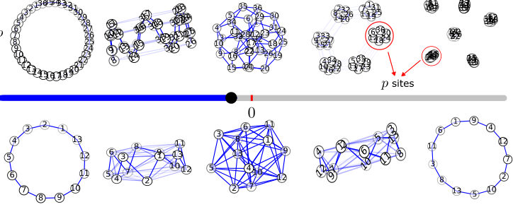
<figcaption class="paper-figure-caption"><b>Fig 1.</b> FIG. 1. Slider schematic of the geometry underlying the sparse long-range models as a function of the tuning parameter s. For the power-of-p construction (top), varying s continuously deforms the effective interaction geometry between the N = pl sites, interpolating between a ring-like structure, intermediate “tambourine”-like connectivity, a sparse all-to-all configuration, and finally a set of disconnected loops of size p. Here p = 6, l = 2, N = 36. The Fibonacci construction (bottom), defined on N sites with N a Fibonacci number, exhibits a symmetric evolution about s = 0, transitioning from a ring-like geometry through increasingly connected structures to a maximally connected...</figcaption>
</figure>
<figure class="paper-figure-card">
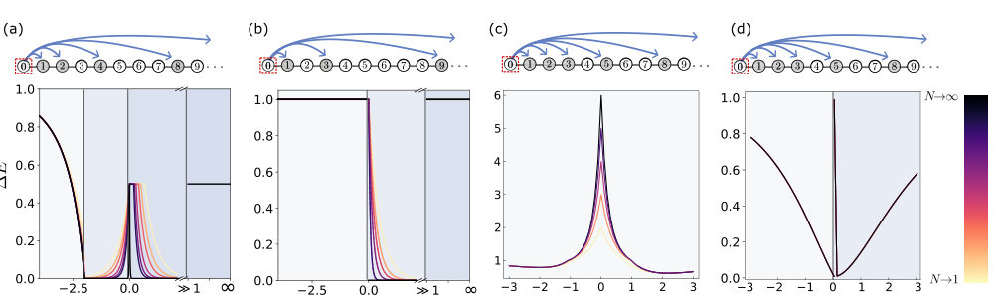
<figcaption class="paper-figure-caption"><b>Fig 2.</b> FIG. 2. Energy gap analysis characterising phases of the classical Ising model on power-of-p and Fibonacci graphs. (a) Power- of-two phase diagram, representative of all even p. Four distinct phases appear in the thermodynamic limit. As p increases, the first critical point (located at s = −2 for p = 2) shifts towards s = −1. (b) Power-of-three phase diagram, representative of all odd p. Three phases occur in the thermodynamic limit. The antiferromagnetic (AFM) configuration remains a ground state for all s; for s &gt; 0, an extensive manifold of competing states becomes degenerate with the AFM. (c) Fibonacci graph for even Fibonacci system sizes Nfib = 34, 144, 610, . . . . No phase...</figcaption>
</figure>
<figure class="paper-figure-card">
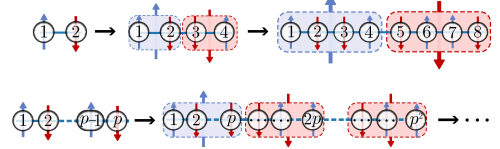
<figcaption class="paper-figure-caption"><b>Fig 3.</b> FIG. 3. Recursive construction of ground-state configurations for power-of-even p graphs. For p = 2 (top), the system size is doubled by appending a globally flipped copy of the previous configuration, yielding an antiferromagnetic ordering of two effective blocks (shown in green/red). Iterating this step gen- erates larger system sizes. For general even p (bottom), the construction proceeds analogously by concatenating p copies of the previous configuration with alternating sign, producing an antiferromagnetic arrangement of p effective blocks.</figcaption>
</figure>
<figure class="paper-figure-card">
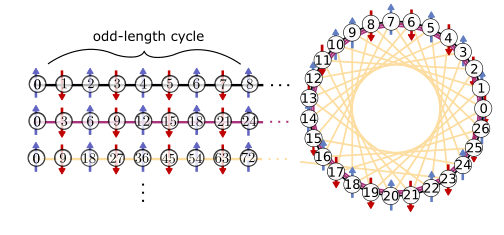
<figcaption class="paper-figure-caption"><b>Fig 4.</b> FIG. 4. Antiferromagnetic state on the p = 3 graph revealing minimal frustration. (Right) The power-of-three graph with each interaction distance d = 3i generating a closed cycle on the ring. Cycles corresponding to d = 1 (black), d = 3 (purple), and d = 9 (peach) are shown. Spins on odd sites are up (blue) and spins on even sites are down (red), corresponding to the antiferromagnetic configuration. (Left) Each colored cycle is unraveled into a one-dimensional chain. Since all cycles have odd length, an antiferromagnetic ordering necessarily frus- trates one bond per cycle, visible at the chain ends. This is the minimal number of frustrated bonds possible on an odd- length cycle.</figcaption>
</figure>
<figure class="paper-figure-card">
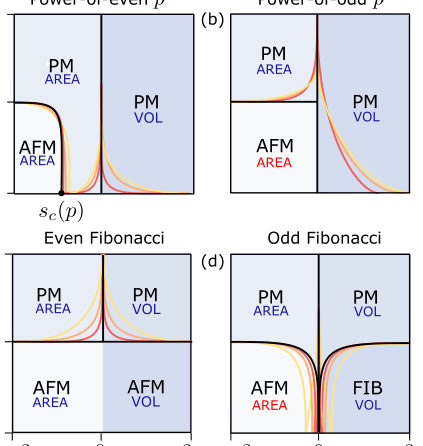
<figcaption class="paper-figure-caption"><b>Fig 5.</b> FIG. 5. Schematics of quantum phase diagrams for the transverse-field Ising model on logarithmically sparse graphs. Panels (a) and (b) show representative power-of-p graphs: p = 2 for the even-p class with N = 8, 16, 32 and p = 3 for the odd-p class with N = 9, 27, 81. Panels (c) and (d) show Fibonacci graphs for even and odd Fibonacci system sizes, respectively, using the accessible sequences N = 8, 34, 144 and N = 13, 21, 55. Colored curves denote finite-size estimates of phase boundaries where numerical convergence is obtained, while the bold black curves summarize the thermodynamic extrapolations, combining finite-size scaling, SKQD results, and analytically controlled limiting regimes....</figcaption>
</figure>
</div>

<p><strong>Summary.</strong> This research explores how the geometric arrangement of interactions dictates the low-energy phases of complex quantum lattice models on sparse graphs. By analyzing power-of-$p$ and Fibonacci structures, the authors establish an 'effective-geometry principle' that unifies understanding across different interaction regimes. The findings are crucial for designing and predicting the behavior of experimentally realized long-range quantum systems.</p>
<p><strong>Why it may be interesting.</strong> This work provides a powerful, general framework for understanding how topology and connectivity dictate quantum many-body physics in systems with long-range interactions, which is highly relevant to engineered quantum materials or artificial lattices.</p>
<details>
<summary>Detailed structure</summary>
<p><strong>Main problem.</strong> The study investigates how the geometric structure of interactions dictates the low-energy quantum phases and phase transitions in sparse, long-range quantum lattice models.</p>
<p><strong>Main result.</strong> Phase structure is governed by an 'effective-geometry principle,' showing distinct behaviors for even vs. odd power-of-$p$ graphs, and revealing symmetries (like those in Fibonacci graphs) that map short-range physics onto long-range limits.</p>
<p><strong>Method.</strong> The analysis employs a combination of analytical techniques (e.g., diagonalization in momentum space), numerical simulations (DMRG, Monte Carlo), and scaling arguments to characterize ground states across various interaction regimes.</p>
<p><strong>Model / system.</strong> The models are sparse quantum lattices, including power-of-$p$ graphs and Fibonacci graphs, analyzed using both Transverse Field Ising Models (spin systems) and fermionic hopping Hamiltonians. Interactions decay with distance $d$ as $J_d \propto d^s$.</p>
<p><strong>Key observables.</strong> Ground-state phase diagrams, spectral gaps ($\Delta E$), entanglement scaling (area/volume law), and density-density correlation functions ($g_2(d)$).</p>
<p><strong>Important parameters / regimes.</strong> The interaction exponent $s$ acts as a primary control knob, determining the relative weight of short vs. long-range interactions; graph structure (e.g., $p=2$ vs. $p=3$) is crucial.</p>
<p><strong>Assumptions / limitations.</strong> The analysis often relies on mapping complex systems to effective 1D geometries or assuming specific asymptotic limits ($s 	o -\infty$ or $s 	o +\infty$).</p>
<p><strong>Figures summary.</strong> Figures illustrate phase diagrams for different graph types, show spectral gap closing/reopening as a function of the interaction exponent $s$, and compare correlation functions based on system size parity (even vs. odd N).</p>
<p><strong>Paper structure.</strong> The paper systematically compares results across multiple graph families (power-of-$p$ vs. Fibonacci) and models (spin vs. fermionic), establishing a unified 'effective-geometry principle' that governs phase transitions regardless of the specific lattice structure.</p>
</details>
<details>
<summary>Abstract</summary>
<p>We investigate how interaction geometry shapes the low-energy phases of sparse tunable long-range quantum models. We focus on a class of graphs whose degree grows logarithmically with system size, and show how symmetry and frustration in graph connectivity can drive, suppress, and reshape ground-state phase transitions. The central examples are power-of-$p$ graphs, where even and odd values of $p$ exhibit qualitatively distinct behaviour: even-$p$ graphs inherit the rich phase structure of the power-of-two model, while odd-$p$ graphs are governed by geometric frustration. Fibonacci graphs provide a contrasting case, lacking the discrete self-similarity of the power-of-$p$ family but exhibiting a direct geometric mapping between the short- and long-range limits. Across our models, we find that phase structure and criticality are governed by the same effective-geometry principle, unifying our framework for experimentally motivated long-range quantum systems.</p>
</details>
<p><sub><a href="#top">↑ back to top</a></sub></p>

<p><a id="paper-2606.19601"></a></p>
<h3 id="string-dynamics-of-a-21d-u1-quantum-link-model-on-a-digital-quantum-computer"><a href="http://arxiv.org/abs/2606.19601v1">String dynamics of a (2+1)D U(1) quantum link model on a digital quantum computer</a></h3>
<p><strong>Authors:</strong> Anthony Gandon, Alessandro Mariani, Debasish Banerjee, Emilie Huffman, Gurtej Kanwar, Francesco Tacchino, Uwe-Jens Wiese, Ivano Tavernelli<br>
<strong>Type:</strong> both · <strong>Category:</strong> statistical mechanics · <strong>PDF:</strong> <a href="https://arxiv.org/pdf/2606.19601v1">https://arxiv.org/pdf/2606.19601v1</a><br>
<strong>Analysis basis:</strong> full PDF text, analyzed in chunks
<strong>Topic relevance:</strong> 🔥 <code>non-equilibrium dynamics</code> <strong>5/5</strong> · 🔥 <code>QC/QI experiment</code> <strong>4/5</strong> · 🔥 <code>analog quantum simulation</code> <strong>4/5</strong> · 🔥 <code>methods for driven-dissipative</code> <strong>4/5</strong> · 🔥 <code>non-equilibrium universality</code> <strong>4/5</strong> · <code>driven-dissipative phase transition</code> <strong>3/5</strong> · <code>exotic spin models in light-matter</code> <strong>3/5</strong> · <code>Keldysh / 2PI / non-Gaussian methods</code> <strong>1/5</strong> · <code>entanglement &amp; information structure</code> <strong>1/5</strong></p>
<div class="figure-strip-hint">↔ Scroll figures horizontally</div>
<div class="paper-figures-scroll">
<figure class="paper-figure-card">
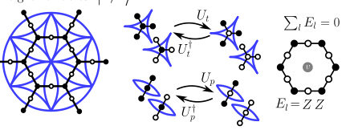
<figcaption class="paper-figure-caption"><b>Fig 1.</b> FIG. 1. a) Hexafoil lattice, in blue, with gauge degrees of freedom on the edges of the hexafoil lattice. The dual heavy- hexagonal lattice, in black, corresponds to the available hard- ware topology. It has qubit degrees of freedom on the vertices represented by dots. b) Correspondence of states and oper- ators under the dualization from gauge to height variables. With open boundary conditions, each configuration of gauge fluxes is equivalent to two height variable configurations.</figcaption>
</figure>
<figure class="paper-figure-card">
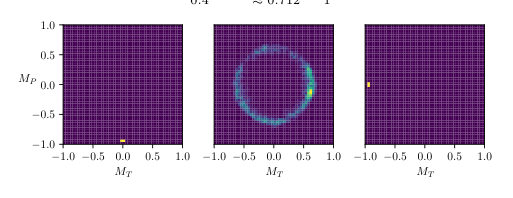
<figcaption class="paper-figure-caption"><b>Fig 2.</b> FIG. 2. Histograms of the sampled Monte Carlo distributions of the MT , MP observables at three different values of KP , namely KP = 0.4 (phase where the petals are ordered), KP = 0.712 (the transition point) and KP = 1.0 (phase where the triangles order). The central picture shows the emergent U(1) symmetry at the transition point.</figcaption>
</figure>
<figure class="paper-figure-card">
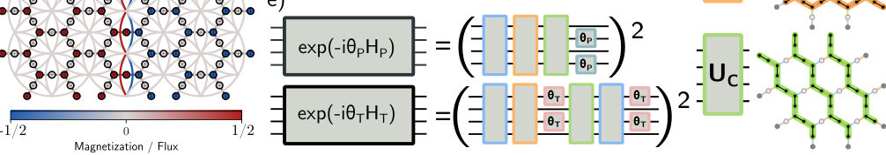
<figcaption class="paper-figure-caption"><b>Fig 3.</b> FIG. 3. a) b) Two sublattices of the heavy-hex hardware graph used in this work, with 4 and 13 heavy-hexagons respectively. The height variables are initially prepared in the lowest-energy eigenstate of Hdual(∞) corresponding to a Gauss law sector with two static charges qv = ±1 on the boundary. The initial qubit states are labeled as |0/1⟩and |±⟩with associated magnetization colored from blue to red. Trotter decomposition of the dual spin Hamiltonian Hdual. c) Tricoloring of the edges Ehhex. d) Independent non-Clifford layers (pink and turquoise) and Clifford layers (blue, orange, green). e) This Trotter decomposition involves 6 entangling layers for the petal Hamiltonian HP and 8...</figcaption>
</figure>
<figure class="paper-figure-card">
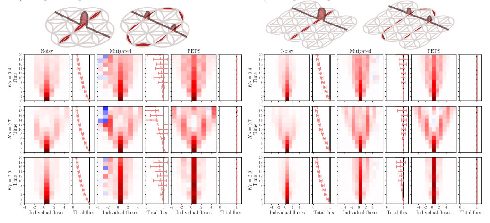
<figcaption class="paper-figure-caption"><b>Fig 4.</b> FIG. 4. Dynamics of the petal flux densities along a single cross-section for the lattices with respectively 4 and 13 full heavy- hexagons. The estimators from the quantum hardware, both raw and mitigated, are compared to reference PEPS results at multiple couplings KP ∈{0.4, 0.7, 2.0}. The single transversal slice, or cross-section, is represented at the top of the figure in two cartoon flux configurations that are explored throughout the dynamics. The first one corresponds to a narrow flux line carrying a full integer flux, while the second one corresponds to two well-resolved flux lines carrying half fluxes. The observables are measured for various circuit depths corresponding to total...</figcaption>
</figure>
<figure class="paper-figure-card">
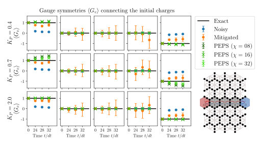
<figcaption class="paper-figure-caption"><b>Fig 5.</b> FIG. 5. Expectation values of the gauge symmetry opera- tors Gv for the subset of sites v ∈Vhfoil connecting the two static charges in the larger lattice with 13 heavy-hexagons. The drawing highlights the five gauge symmetries as well as their expected eigenvalues gv. The experiment was repeated both on hardware (blue and orange points) and simulated with PEPS at finite bond-dimensions χ ∈{8, 16, 32} (green points), at long times t = k × dt with k ∈{24, 28, 32} and for the couplings KP ∈{0.4, 0.7, 2.0}.</figcaption>
</figure>
</div>

<p><strong>Summary.</strong> This work investigates the string dynamics and phase transitions of a (2+1)D U(1) quantum link model using both state-of-the-art digital quantum simulations and theoretical tensor network methods. By simulating real-time quenches, the researchers probe phenomena like flux fractionalization and confinement in regimes inaccessible to traditional classical simulation techniques.</p>
<p><strong>Why it may be interesting.</strong> The combination of simulating gauge theories—which are notoriously difficult due to sign problems—on superconducting qubits provides a unique, highly relevant platform for studying non-equilibrium dynamics in condensed matter systems.</p>
<details>
<summary>Detailed structure</summary>
<p><strong>Main problem.</strong> The study focuses on understanding string dynamics, phase transitions, and confining properties within a (2+1)D U(1) quantum link model.</p>
<p><strong>Main result.</strong> Experimental quantum simulations show good agreement with tensor-network calculations at short times, confirming the model's ability to probe real-time dynamics near critical points.</p>
<p><strong>Method.</strong> The research combines digital quantum simulation (quantum quenches) for real-time evolution with Quantum Monte Carlo and Tensor Network methods for equilibrium/static properties.</p>
<p><strong>Model / system.</strong> The system is a minimal U(1) quantum link model defined on lattices like the hexafoil lattice, governed by plaquette interactions involving spin-1/2 variables representing electric flux.</p>
<p><strong>Key observables.</strong> String tension ($\sigma$), transverse quantum fluctuations of the string, local order parameters ($M_T, M_P$), and gauge symmetry violations ($\|G_v - g_v\|^2$).</p>
<p><strong>Important parameters / regimes.</strong> Coupling constants ($K_P, K_E$) are varied to map out phase diagrams; critical points near $K_P=0.7$ are key.</p>
<p><strong>Assumptions / limitations.</strong> The quantum hardware simulations rely on error mitigation techniques (like CPT) to counteract noise, and theoretical comparisons use approximations like PEPS bond dimensions ($\chi$).</p>
<p><strong>Figures summary.</strong> Figures illustrate dynamics of flux densities for varying couplings ($K_P$), compare raw vs. mitigated expectation values against tensor network results, and plot energy/magnetization order parameters across phase diagrams.</p>
<p><strong>Paper structure.</strong> The paper progresses from defining the Hamiltonian and lattice geometry to performing equilibrium QMC calculations (mapping out phases) and finally executing real-time quantum quench experiments on hardware to probe dynamic behavior near critical points.</p>
</details>
<details>
<summary>Abstract</summary>
<p>The (2+1)D U(1) pure gauge theory always exists in the confining phase, with strings of non-zero string tension giving a characteristic linear potential between static charges. This makes it a useful testing ground for quantum computing methods designed to study string dynamics of confining gauge theories. Here we implement a minimal U(1) quantum link model on a quantum computer with qubit degrees of freedom representing the dual height variables of the model. This facilitates an efficient realization of plaquette interactions and enables effective calculations of real-time dynamics that are inaccessible to traditional quantum Monte Carlo. A specifically tailored lattice geometry is chosen to match the heavy-hexagonal geometry of the IBM quantum hardware used here, minimizing non-adjacent qubit interactions. By performing quantum quenches from a simple initial string state, we probe the transverse quantum fluctuations of the string before it thermalizes. Our experimental results from digital quantum simulations, with up to 112 qubits, show good agreement with reference tensor-network calculations at short times and with thermal averages at long times. Near the phase transition, the quench dynamics exhibit large fluctuations of the initial string that extend across both spatial dimensions of the lattice. Nonetheless, our error-mitigated estimators from the quantum hardware also give accurate predictions in that regime, with noise-induced violations of local gauge symmetries comparable to finite-bond-dimension tensor-network results.</p>
</details>
<p><sub><a href="#top">↑ back to top</a></sub></p>

<p><a id="paper-2606.20445"></a></p>
<h3 id="space-time-duality-approach-to-inhomogeneous-integrable-quenches"><a href="http://arxiv.org/abs/2606.20445v1">Space-time duality approach to (inhomogeneous) integrable quenches</a></h3>
<p><strong>Authors:</strong> Riccardo Travaglino, Pasquale Calabrese, Katja Klobas, Bruno Bertini<br>
<strong>Type:</strong> theory · <strong>Category:</strong> statistical mechanics · <strong>PDF:</strong> <a href="https://arxiv.org/pdf/2606.20445v1">https://arxiv.org/pdf/2606.20445v1</a><br>
<strong>Analysis basis:</strong> full PDF text, analyzed in chunks
<strong>Topic relevance:</strong> 🔥 <code>non-equilibrium dynamics</code> <strong>5/5</strong> · 🔥 <code>entanglement &amp; information structure</code> <strong>4/5</strong> · 🔥 <code>non-equilibrium universality</code> <strong>4/5</strong> · <code>Keldysh / 2PI / non-Gaussian methods</code> <strong>3/5</strong> · <code>analog quantum simulation</code> <strong>2/5</strong> · <code>methods for driven-dissipative</code> <strong>2/5</strong> · <code>scars &amp; prethermalization</code> <strong>2/5</strong> · <code>correlated / nonlocal dissipation</code> <strong>1/5</strong> · <code>driven-dissipative phase transition</code> <strong>1/5</strong> · <code>exotic spin models in light-matter</code> <strong>1/5</strong></p>
<div class="figure-strip-hint">↔ Scroll figures horizontally</div>
<div class="paper-figures-scroll">
<figure class="paper-figure-card">
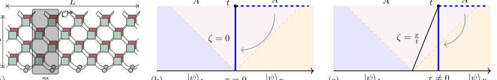
<figcaption class="paper-figure-caption"><b>Fig 1.</b> Figure 1: (a): A tensor-network diagram of a local expectation value after a quantum quench under circuit evolution. Green and red gates represent U and U ∗respectively, gray circles at the bottom are the initial (product) state, and the circle at the top is a local observable O. Equivalently the tensor network can be contracted in space by replacing the space-transfer matrix T with the projector to its leading eigenvectors. (b): Duality from the original entropy of A at time t (dashed blue line) to the entropy in the dual channel at the boundary of A (full blue line). The light cone represents the region in which the occupation functions are a mixture of those of left and right states....</figcaption>
</figure>
<figure class="paper-figure-card">
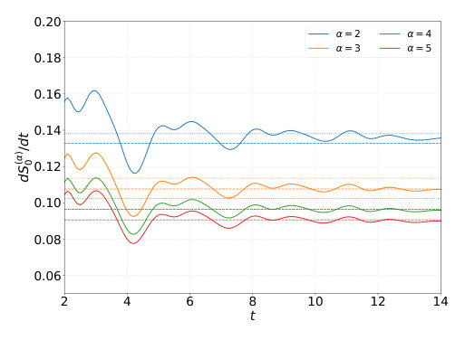
<figcaption class="paper-figure-caption"><b>Fig 2.</b> Figure 2: Instantaneous slope of the Rényi entropies of [0, ∞] after a quench from the bipartite state |N, 0⟩L ⊗ |N, π/12⟩R in the XXZ chain with ∆= 4. Dashed lines represent the predictions obtained by using sgn(ε′(θ)), while dotted lines are the predictions obtained using sgn(vdr(θ)).</figcaption>
</figure>
<figure class="paper-figure-card">
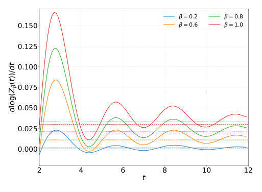
<figcaption class="paper-figure-caption"><b>Fig 3.</b> Figure 3: Instantanoeus slope of the FCS of the left half [−∞, 0] in a quench from the state |N, 0⟩L ⊗|D⟩R in the XXZ chain with ∆= 0.5. While the numerics ex- hibits good convergence to the asymptotic values pre- dicted, strong oscillations make it impossible to distin- guish between the two sign choices on the time intervals accessible via TEBD.</figcaption>
</figure>
<figure class="paper-figure-card">
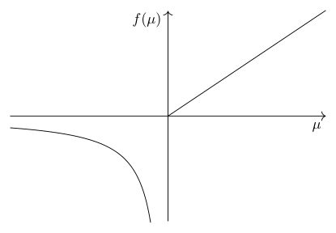
<figcaption class="paper-figure-caption"><b>Fig 4.</b> Figure 4: Sketch of a possible reparametrisation f(µ) that is non-monotonic but injective.</figcaption>
</figure>
<figure class="paper-figure-card">
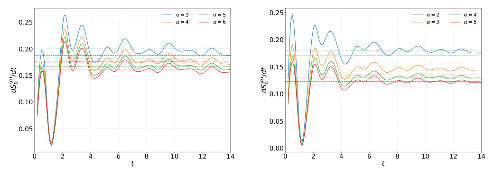
<figcaption class="paper-figure-caption"><b>Fig 5.</b> Figure 5: Instantaneous slope of Rényi entropies in two quenches in the XXZ chain with ∆= 4. On the left the initial state is |N, 0⟩L ⊗|N, π/6⟩R, while on the right |N, 0⟩L ⊗|N, π/8⟩R. Dashed lines represent the predictions obtained by using sgn(ε′(θ)), while dotted lines are the predictions obtained using sgn(vdr(θ)). In both cases, while for lower α it is impossible to distinguish between the two predictions at the scale accessible via TEBD, the solution at higher α shows clearly that the numerical solution converges to the dashed line.</figcaption>
</figure>
</div>

<p><strong>Summary.</strong> The paper develops and refines a Space-Time Duality Approach (SDA) to analyze non-equilibrium dynamics in integrable quantum many-body systems. It resolves previous theoretical ambiguities to provide exact analytical formulas for quantities like entanglement growth and charge fluctuations following general quenches. This advances the understanding of how equilibrium concepts can be used to solve complex, out-of-equilibrium physics problems.</p>
<p><strong>Why it may be interesting.</strong> This work provides powerful, general theoretical tools for understanding how quantum information spreads and thermalizes in interacting systems far from equilibrium, which is central to modern AMO physics research on open quantum systems.</p>
<details>
<summary>Detailed structure</summary>
<p><strong>Main problem.</strong> Characterizing universal aspects of non-equilibrium quantum many-body dynamics, particularly for interacting systems far from equilibrium.</p>
<p><strong>Main result.</strong> The authors derive closed-form analytical predictions for entanglement growth and charge fluctuations after general inhomogeneous quenches in integrable systems by resolving ambiguities in the space-time duality approach (SDA).</p>
<p><strong>Method.</strong> They employ the Space-Time Duality Approach (SDA), which maps non-equilibrium dynamics to stationary properties of a dual theory, utilizing generalized Thermodynamic Bethe Ansatz (TBA) equations and Generalized Hydrodynamics (GHD).</p>
<p><strong>Model / system.</strong> The study focuses on one-dimensional integrable quantum systems, exemplified by the XXZ spin chain model. The analysis covers both gapped ($\Delta > 1$) and gapless ($\Delta \le 1$) regimes.</p>
<p><strong>Key observables.</strong> Entanglement growth (Rényi entropies $S_\alpha$), fluctuations of conserved charges, and one-point functions of local operators.</p>
<p><strong>Important parameters / regimes.</strong> The quench protocol is general and inhomogeneous; key limits include the homogeneous quench limit ($\zeta=0$) and the Von Neumann limit ($\alpha 	o 1$).</p>
<p><strong>Assumptions / limitations.</strong> The initial state $|\psi_0
angle$ is assumed to have short-range correlations, and the framework relies on assuming scale invariance for bipartite quenches.</p>
<p><strong>Figures summary.</strong> Figures illustrate tensor-network diagrams showing local expectation values under circuit evolution and map out the duality between entropy calculations in the original and dual channels. Other figures show instantaneous slopes of Rényi entropies and FCS vs. time for the XXZ chain quench.</p>
<p><strong>Paper structure.</strong> The paper establishes the SDA framework, resolves its intrinsic ambiguities by matching predictions to known results (like Rule 54), derives closed-form expressions using generalized TBA/GHD techniques, and benchmarks these analytical results against TEBD simulations of the XXZ chain.</p>
</details>
<details>
<summary>Abstract</summary>
<p>Characterising the universal aspects of non-equilibrium quantum many-body dynamics is one of the key goals of this century's physics research. Progress, however, is hindered by the lack of general theoretical frameworks for studying interacting quantum matter far from equilibrium. A recent breakthrough has been the realization that several key non-equilibrium quantities, such as the rate of growth of entanglement or the fluctuations of conserved charges within finite subsystems, can be related to equilibrium properties through a space-time duality that effectively exchanges the roles of space and time. This observation effectively enables the study of non-equilibrium phenomena using tools and concepts borrowed from equilibrium statistical mechanics and thermodynamics. A first proof of principle of this framework, dubbed space-time duality approach (SDA), was provided by interacting integrable systems, where thermodynamic properties can often be characterized exactly, while dynamical quantities typically remain beyond analytical reach. Subsequent developments, however, revealed that the SDA suffered from an intrinsic ambiguity, restricting its applicability to homogeneous quenches and to charge fluctuations arising from symmetric initial states. Here we resolve this ambiguity from first principles and derive closed-form predictions for entanglement growth and charge fluctuations after general quantum quenches. We benchmark our results against the exact analytical solution of the Rule 54 quantum cellular automaton and extensive TEBD simulations of the XXZ chain. Moreover we show that, when specialised to the entanglement entropy, our framework naturally reproduces the predictions of the quasiparticle picture.</p>
</details>
<p><sub><a href="#top">↑ back to top</a></sub></p>

<p><a id="paper-2606.20278"></a></p>
<h3 id="proposal-of-quantum-arrival-time-measurement-with-a-bose-einstein-condensate"><a href="http://arxiv.org/abs/2606.20278v1">Proposal of quantum arrival-time measurement with a Bose-Einstein condensate</a></h3>
<p><strong>Authors:</strong> Pascal Naidon, Lucas Happ, Denis Boiron<br>
<strong>Type:</strong> both · <strong>Category:</strong> quantum gases · <strong>PDF:</strong> <a href="https://arxiv.org/pdf/2606.20278v1">https://arxiv.org/pdf/2606.20278v1</a><br>
<strong>Analysis basis:</strong> full PDF text, analyzed in chunks
<strong>Topic relevance:</strong> 🔥 <code>quantum measurements</code> <strong>5/5</strong> · 🔥 <code>measurement-induced transitions</code> <strong>4/5</strong> · <code>analog quantum simulation</code> <strong>3/5</strong> · <code>non-equilibrium dynamics</code> <strong>2/5</strong> · <code>quantum optics experiment</code> <strong>2/5</strong> · <code>Keldysh / 2PI / non-Gaussian methods</code> <strong>1/5</strong> · <code>QC/QI experiment</code> <strong>1/5</strong> · <code>driven-dissipative phase transition</code> <strong>1/5</strong> · <code>methods for driven-dissipative</code> <strong>1/5</strong></p>
<div class="figure-strip-hint">↔ Scroll figures horizontally</div>
<div class="paper-figures-scroll">
<figure class="paper-figure-card">
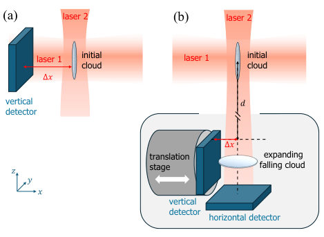
<figcaption class="paper-figure-caption"><b>Fig 1.</b> Figure 1. (a) Standard arrival-time experiment. (b) Our experimental setup proposal. In both cases, a vertical and a horizontal laser beams form an optical dipole trap in which a cloud of metastable helium-4 atoms is trapped – here, it is illustrated for configuration (1) of the lasers, which produces a vertical cigar-shaped cloud. At some time, the cloud is released by switching off laser 2 (a) or both laser beams (b). In our proposal (b), the cloud falls into a lower chamber where it can be detected on a horizontal and a vertical microchannel plate detector.</figcaption>
</figure>
<figure class="paper-figure-card">
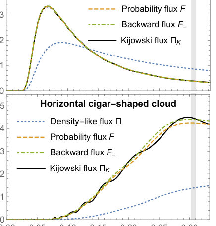
<figcaption class="paper-figure-caption"><b>Fig 2.</b> Figure 2. Arrival-time distributions based on the predic- tions Eqs. (1-4) for a helium-4 atom in a condensate of 104</figcaption>
</figure>
<figure class="paper-figure-card">
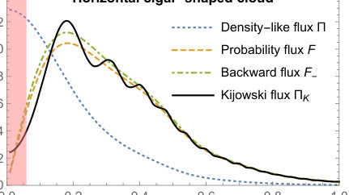
<figcaption class="paper-figure-caption"><b>Fig 3.</b> Figure 3. Average number of counts on the vertical detec- tor, based on the predictions Eqs. (1-4), as a function of the horizontal position of the detector. The counts at a given position correspond to a single experiment with 104</figcaption>
</figure>
</div>

<p><strong>Summary.</strong> The authors propose using Bose-Einstein condensates to experimentally investigate the controversial question of particle arrival time. By measuring the arrival flux at a detector placed far from the source, they circumvent technical limitations and can distinguish between competing theoretical models for quantum transport. This provides a powerful testbed connecting fundamental theory with advanced cold atom experiments.</p>
<p><strong>Why it may be interesting.</strong> This work is highly relevant as it merges fundamental theoretical questions about quantum dynamics with cutting-edge experimental techniques in cold atom physics, providing a concrete roadmap for testing foundational quantum concepts.</p>
<details>
<summary>Detailed structure</summary>
<p><strong>Main problem.</strong> The work addresses the fundamental, long-standing quantum mechanical question of determining the time taken for a particle to travel between two points.</p>
<p><strong>Main result.</strong> A novel experimental setup using Bose-Einstein condensates can measure the arrival flux at a distant detector, allowing unambiguous discrimination between various theoretical predictions for arrival-time distributions.</p>
<p><strong>Method.</strong> The methodology proposes measuring the arrival flux on a detector placed far from the source, rather than attempting direct time measurement near the source to avoid back-action and technical limitations.</p>
<p><strong>Model / system.</strong> The physical system is a Bose-Einstein condensate (BEC) of ultracold atoms. The dynamics are governed by the Gross-Pitaevskii equation, and the experiment utilizes the BEC's expansion as it falls towards a detector.</p>
<p><strong>Key observables.</strong> The primary observable is the average number of detected counts on the detector as a function of its horizontal position ($\Delta x$), which reveals the arrival flux distribution $\Pi(t)$.</p>
<p><strong>Important parameters / regimes.</strong> Key parameters include the total atom number ($N$) and trapping frequencies ($\omega_{\parallel}, \omega_{\perp}$), with noise reduction requiring averaging over many experimental runs.</p>
<p><strong>Assumptions / limitations.</strong> The analysis assumes that measurements can be performed far from the source to minimize disturbance, and that sufficient averaging is possible to overcome shot noise obscuring predicted oscillations.</p>
<p><strong>Figures summary.</strong> Figures illustrate the limitations of standard near-source detection versus the proposed distant setup. Supplementary figures demonstrate how increasing atom number ($N$) and averaging over many experiments are necessary to reveal small oscillatory patterns predicted by axiomatic approaches.</p>
<p><strong>Paper structure.</strong> The paper first establishes the theoretical ambiguity regarding arrival time measurements, then details the practical limitations of existing setups (Fig 1a). It proposes a novel, distant detection scheme using BECs (Fig 1b), discusses observable diagnostics ($\Delta x$ dependence), and finally analyzes the feasibility of detecting subtle quantum effects like oscillations via noise analysis.</p>
</details>
<details>
<summary>Abstract</summary>
<p>This work shows how a Bose-Einstein condensate of ultracold atoms could be used to address a long-standing question in quantum theory: how much time does it take for a particle to reach a detector? To this end, we propose a realistic experimental setup, whose key idea is not to measure arrival times directly, but the arrival flux on the detector as a function of its position. This novel approach not only solves practical issues with having a detector close to the system, but also results in signals that allow to unambiguously distinguish different theoretical predictions. This proposal raises prospects for resolving the decades-old debate on this fundamental issue.</p>
</details>
<p><sub><a href="#top">↑ back to top</a></sub></p>

<p><a id="paper-2606.19444"></a></p>
<h3 id="unleashing-emergent-fermions-with-rydberg-atom-simulators"><a href="http://arxiv.org/abs/2606.19444v1">Unleashing Emergent Fermions with Rydberg Atom Simulators</a></h3>
<p><strong>Authors:</strong> Hanteng Wang, Xingyu Li, Shang Liu, Yingfei Gu, Chengshu Li<br>
<strong>Type:</strong> both · <strong>Category:</strong> other · <strong>PDF:</strong> <a href="https://arxiv.org/pdf/2606.19444v1">https://arxiv.org/pdf/2606.19444v1</a><br>
<strong>Analysis basis:</strong> full PDF text, analyzed in chunks
<strong>Topic relevance:</strong> 🔥 <code>Rydberg arrays</code> <strong>5/5</strong> · 🔥 <code>analog quantum simulation</code> <strong>4/5</strong> · <code>non-equilibrium universality</code> <strong>3/5</strong> · <code>entanglement &amp; information structure</code> <strong>2/5</strong> · <code>non-equilibrium dynamics</code> <strong>2/5</strong> · <code>Keldysh / 2PI / non-Gaussian methods</code> <strong>1/5</strong> · <code>QC/QI experiment</code> <strong>1/5</strong> · <code>driven-dissipative phase transition</code> <strong>1/5</strong> · <code>methods for driven-dissipative</code> <strong>1/5</strong></p>
<div class="figure-strip-hint">↔ Scroll figures horizontally</div>
<div class="paper-figures-scroll">
<figure class="paper-figure-card">
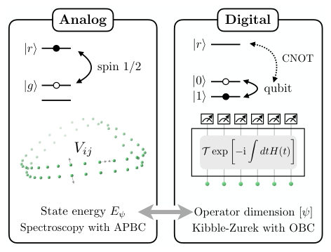
<figcaption class="paper-figure-caption"><b>Fig 1.</b> Figure 1. Schematic of two routes for probing emergent fermions with Rydberg atom simulators. (Left) In the analog mode, each atom realizes a spin-1/2 degree of freedom, and the geometric reconfigurability of the array, together with the interactions Vij, constructs the tricritical Ising model with APBC. Spectroscopy provides access to the fermionic state energies Eψ. (Right) In the digital mode, a qubit array with programmable gates implements the real-time evolution of a fermionic Kibble–Zurek protocol with OBC, probing the scal- ing dimension [ψ].</figcaption>
</figure>
<figure class="paper-figure-card">
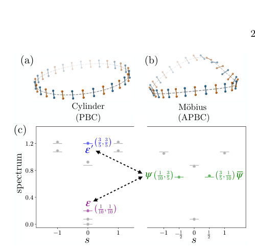
<figcaption class="paper-figure-caption"><b>Fig 2.</b> Figure 2. (a) Cylinder geometry realizing PBC with 2L atoms. (b) Optimized developable M¨obius geometry realiz- ing APBC. (c) Corresponding low-energy spectra, organized by conformal spin s. The bosonic primaries ε (blue) and ε′</figcaption>
</figure>
<figure class="paper-figure-card">
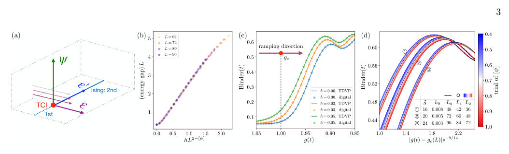
<figcaption class="paper-figure-caption"><b>Fig 3.</b> Figure 3. (a) Schematic near the TCI point in the (ε, ε′, ψ) parameter space, controlled by (g −gc, λ−λTCI, h). The pale-purple arrows indicate ramp trajectories passing near the TCI point at different fixed h. (b) Finite-size scaling collapse of the gap opened by Hχ at the TCI point. (c) Dynamical Binder ratio during a ramp across the transition for L = 16, comparing TDVP lines with digital-circuit data points. (d) Fermionic Kibble–Zurek results for the three data sets labeled 1 ○, 2 ○, and 3 ○, each with different ˜s and h0. Each data set contains three system sizes (L0, L1, L2), whose KZ curves collapse when [ψ] = 7/10. The color scale denotes the trial value of [ψ]; values away from...</figcaption>
</figure>
<figure class="paper-figure-card">
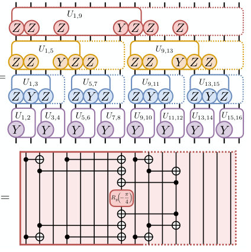
<figcaption class="paper-figure-caption"><b>Fig 4.</b> Figure 4. Circuit implementation of e−itHχ in the FBK ba- sis for L = 16. (a) From bottom to top, UFBK maps JW Majoranas χi to FBK Majoranas eχi, UL→1 rotates P</figcaption>
</figure>
<figure class="paper-figure-card">
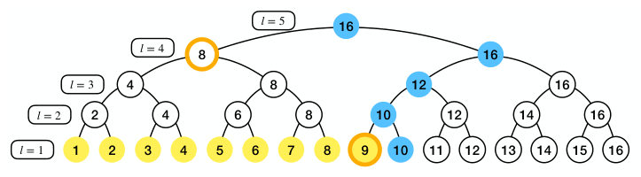
<figcaption class="paper-figure-caption"><b>Fig 5.</b> Figure 5. The Fenwick tree for L = 16 with five layers, l = 1, ..., 5. In each layer other than l = 1, a node has the same number as its right-hand-side leaf. Each node by definition “controls” all other nodes below. With the Fenwick tree, one can easily transform the JW-related operators X1 · · · Xi and Zi into the FBK basis. Taking the same example as in Fig. 4(b), X1 · · · X9 is transformed to X8X9 because the nodes 8 and 9 (circled in orange) control the lowermost leaves 1 through 9 (highlighted in yellow), with Λ(9) = {8, 9}. On the other hand, Z10 is transformed to Z10Z12Z16 (highlighted in blue), by tracking which nodes are traversed when one starts from 10 and goes all the way up.</figcaption>
</figure>
</div>

<p><strong>Summary.</strong> The paper details two advanced protocols—one analog and one digital—to use Rydberg atom simulators to experimentally investigate emergent fermionic excitations in bosonic quantum systems. By leveraging geometric reconfigurability, they achieve state-of-the-art circuit depth scaling for simulating non-local dynamics. This establishes the platform as a powerful tool for testing fundamental concepts from condensed matter theory.</p>
<p><strong>Why it may be interesting.</strong> This work is highly relevant as it pushes the boundaries of experimental realization in AMO physics by mapping abstract theoretical concepts (emergent fermions, CFT) onto a programmable hardware platform (Rydberg atoms), while simultaneously advancing the computational methods needed to simulate these complex interactions.</p>
<details>
<summary>Detailed structure</summary>
<p><strong>Main problem.</strong> To experimentally probe emergent fermions that are nonlocally defined within a bosonic quantum many-body system, particularly by characterizing critical phenomena and scaling dimensions.</p>
<p><strong>Main result.</strong> The authors propose complementary analog (Möbius band) and digital (Kibble-Zurek ramping) protocols using Rydberg atom simulators to verify conformal invariance and establish the platform's capability for probing emergent fermionic excitations.</p>
<p><strong>Method.</strong> The work combines theoretical analysis of boundary conditions (APBC vs. OBC) with quantum simulation techniques, including implementing complex non-local gates via binary-tree compression on programmable qubit arrays.</p>
<p><strong>Model / system.</strong> The primary platform is the Rydberg atom simulator, which can realize both analog and digital protocols. The physics involves studying critical points (TCI class) where emergent fermionic degrees of freedom are expected to appear in an otherwise bosonic system.</p>
<p><strong>Key observables.</strong> Universal energy ratios ($\epsilon, \epsilon', \psi$), fermionic Kibble-Zurek scaling exponent ($\chi$), and the dynamical Binder ratio collapse.</p>
<p><strong>Important parameters / regimes.</strong> The geometry (Möbius band vs. cylinder), the perturbation strength ($h$), system size ($L$), and critical exponents ($\psi$).</p>
<p><strong>Assumptions / limitations.</strong> In the analog mode, realizing a developable Möbius band geometry is assumed. In the digital mode, Open Boundary Conditions are crucial for isolating the fermionic scaling dimension $[\psi]$.</p>
<p><strong>Figures summary.</strong> Figures illustrate schematics of both protocols (Möbius band/Qubit array), finite-size scaling collapses confirming predicted exponents ($\chi$), and detailed circuit diagrams showing $O(\log L \log \log L)$ gate depth via binary-tree compression.</p>
<p><strong>Paper structure.</strong> The paper is structured around two complementary approaches: the analog method using geometric constraints (Möbius band) to enforce antiperiodic boundary conditions, and the digital method employing quantum circuits for dynamic probing (Kibble-Zurek). A significant portion details the advanced quantum circuit compilation techniques required for non-local gates.</p>
</details>
<details>
<summary>Abstract</summary>
<p>Rydberg atom simulators, in both analog and digital modes, have attracted significant recent interest due to their versatile geometric reconfigurability. In this work, leveraging this feature, we propose two complementary approaches, one for each mode, to characterize emergent fermions in critical quantum many-body systems. In the analog mode, we assemble the Rydberg atoms in a "developable" (namely, preserving local couplings) Möbius band geometry to realize antiperiodic boundary conditions, where fermionic states reside. Spectroscopic measurement in this sector then reveals universal energy ratios of the bosonic and fermionic states. In the digital mode, we carry out a fermionic version of Kibble-Zurek ramping with a quantum circuit, directly addressing the fermionic scaling form. Reconfigurability allows an exponential speed-up of this task, with an $O(\log L\log\log L)$ circuit-depth overhead. Our work establishes the Rydberg atom simulator as a uniquely powerful platform to attack the notoriously difficult issue of experimentally probing emergent fermions that are nonlocally defined in a bosonic system.</p>
</details>
<p><sub><a href="#top">↑ back to top</a></sub></p>

<p><a id="paper-2606.19589"></a></p>
<h3 id="emergency-hub-placement-with-a-neutral-atom-quantum-computer"><a href="http://arxiv.org/abs/2606.19589v1">Emergency hub placement with a neutral-atom quantum computer</a></h3>
<p><strong>Authors:</strong> Sara Tarquini, Matteo Vandelli, Francesco Ferrari, Daniele Dragoni, Francesco Tudisco<br>
<strong>Type:</strong> both · <strong>Category:</strong> other · <strong>PDF:</strong> <a href="https://arxiv.org/pdf/2606.19589v1">https://arxiv.org/pdf/2606.19589v1</a><br>
<strong>Analysis basis:</strong> full PDF text, analyzed in chunks
<strong>Topic relevance:</strong> 🔥 <code>Rydberg arrays</code> <strong>5/5</strong> · 🔥 <code>QC/QI experiment</code> <strong>4/5</strong> · 🔥 <code>analog quantum simulation</code> <strong>4/5</strong> · <code>methods for driven-dissipative</code> <strong>1/5</strong></p>
<div class="figure-strip-hint">↔ Scroll figures horizontally</div>
<div class="paper-figures-scroll">
<figure class="paper-figure-card">
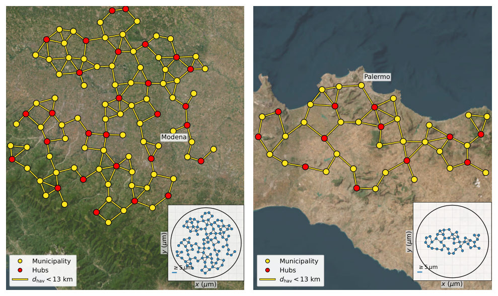
<figcaption class="paper-figure-caption"><b>Fig 1.</b> Figure 1: Case studies of emergency hub placement in the Po Valley area near Modena (left) and in north-western Sicily, including Palermo (right). Graph nodes represent municipalities that are candidate locations for the placement of EOCs. Edges connect pairs of locations which lie within the given travel time Tmax. Red nodes denote the optimal solution of the mDS problem (1) on these graphs. The bottom-left insets of both panels show the embedding of each problem graph in the neutral-atom QPU chamber, corresponding to the associated atomic register.</figcaption>
</figure>
<figure class="paper-figure-card">
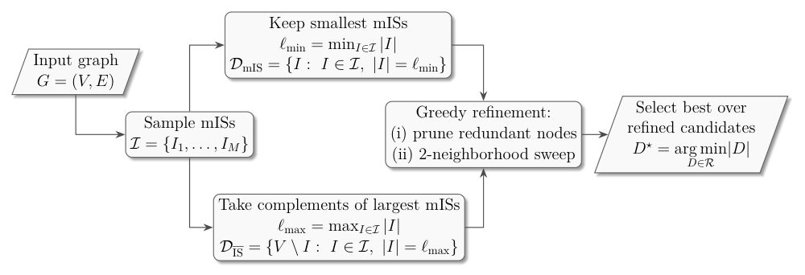
<figcaption class="paper-figure-caption"><b>Fig 2.</b> Figure 2: Two-branch workflow for approximating the minimum dominating set (mDS) from sampled maximal independent sets (mIS), obtained either by classical or quantum methods.</figcaption>
</figure>
<figure class="paper-figure-card">
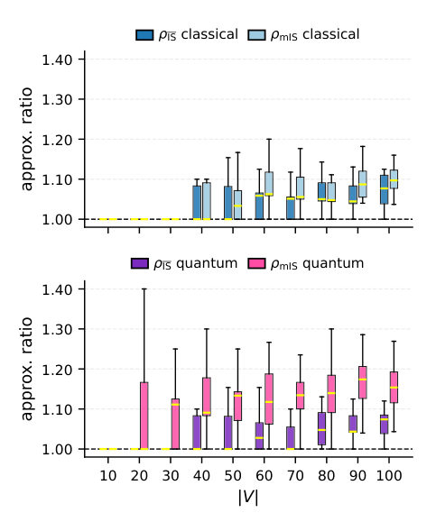
<figcaption class="paper-figure-caption"><b>Fig 3.</b> Figure 3: Boxplot of the approximation ratios found by each branch of the proposed algorithm, ρmIS and ρIS [see Equation (9)], as a function of graph size |V |. We collect statistics on 30 test instances of increasing size up to |V | = 100 on randomly generated unit-disk graphs. The upper panel shows results obtained by sampling mISs classically, while the lower panel shows those obtained with the emulated quantum sampler.</figcaption>
</figure>
<figure class="paper-figure-card">
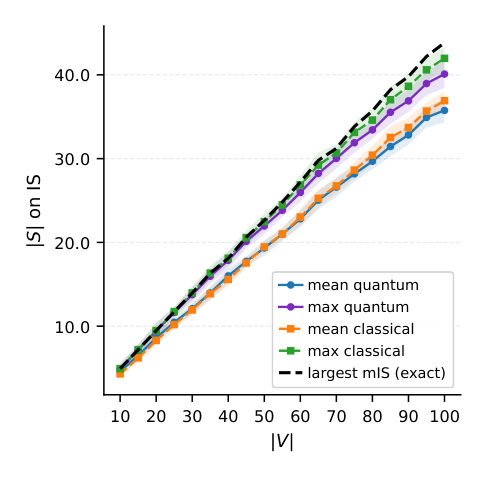
<figcaption class="paper-figure-caption"><b>Fig 4.</b> Figure 4: Mean and maximum sizes of the independent sets obtained with the quantum and classical samplers. We show their average (dots) and the standard deviation (shaded area) across the instances used for the statistical experiments summarized in Figure 3. The dashed black line indicates the size of the largest mIS, averaged over the various instances.</figcaption>
</figure>
<figure class="paper-figure-card">
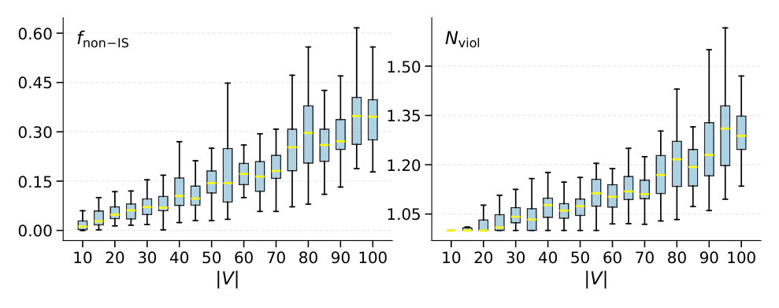
<figcaption class="paper-figure-caption"><b>Fig 5.</b> Figure 5: Left panel: frequency of invalid (i.e., non-IS) samples f¬IS among raw bitstrings from the emulated quantum algorithm. Right panel: severity of the IS violation among non-IS samples, as measured by the number of violating edges Nviol. Statistics are collected over the same instances used for Figure 3.</figcaption>
</figure>
</div>

<p><strong>Summary.</strong> The research tackles the critical emergency hub placement problem by modeling it as finding a Minimum Dominating Set on a graph. They propose and test a hybrid algorithm that uses neutral-atom quantum computers to sample candidate solutions (Independent Sets). The results show that even with hardware noise, this approach yields near-optimal solutions for large, realistic graphs, validating the use of current analog quantum devices for practical optimization tasks.</p>
<p><strong>Why it may be interesting.</strong> This is highly relevant as it directly applies advanced AMO physics tools (Rydberg blockade in neutral atoms) to solve a complex, real-world combinatorial optimization problem, demonstrating near-term quantum utility beyond simple simulation.</p>
<details>
<summary>Detailed structure</summary>
<p><strong>Main problem.</strong> The paper addresses the NP-hard Minimum Dominating Set (mDS) problem, framed as optimizing emergency hub placement in disaster response scenarios.</p>
<p><strong>Main result.</strong> The authors demonstrated that using neutral-atom quantum computers operating in analog mode can generate near-optimal solutions for this graph optimization problem on real-world instances up to 100 nodes.</p>
<p><strong>Method.</strong> A hybrid quantum-classical framework is proposed, where the neutral-atom QPU samples candidate Independent Sets (IS), which are then used via classical post-processing and refinement steps to approximate the mDS.</p>
<p><strong>Model / system.</strong> The physical platform utilized is a neutral-atom quantum computer (specifically mentioning Pasqal's Fresnel processor). The computation relies on the Rydberg blockade mechanism, which naturally constrains the system's low-energy subspace to represent valid independent sets.</p>
<p><strong>Key observables.</strong> Approximation ratio ($
ho$), fraction of invalid samples ($f_{
eg IS}$), and the size of the found dominating set ($mDS$).</p>
<p><strong>Important parameters / regimes.</strong> Instance sizes up to 100 nodes, target response time (e.g., 10 minutes), and QPU operational parameters like Rabi frequency ($\Omega$) and detuning ($\delta$).</p>
<p><strong>Assumptions / limitations.</strong> The core assumption is that the quantum sampling of ISs can provide a sufficiently good starting point for classical refinement to solve the mDS problem, despite hardware noise.</p>
<p><strong>Figures summary.</strong> Figures compare performance metrics (like approximation ratios) across different methods: fully classical, emulated QPU, and actual QPU measurements for instances like Palermo and Modena.</p>
<p><strong>Paper structure.</strong> The paper first defines the graph theory problem (mDS $    o$ IS sampling). It then details the hybrid quantum-classical workflow. The core of the work involves benchmarking this approach on synthetic and realistic geographic case studies using the neutral-atom QPU hardware, comparing results against classical solvers.</p>
</details>
<details>
<summary>Abstract</summary>
<p>We study the problem of emergency operation center placement in disaster response, where a minimal number of hubs must be selected to ensure timely coverage of all affected locations. This task can be formulated as a minimum dominating set problem on a graph encoding reachability within a target response time. We propose a hybrid quantum-classical approximation framework that leverages neutral-atom quantum computers as independent set samplers. Candidate dominating sets are constructed from both small maximal independent sets and complements of large independent sets, and are subsequently refined via a lightweight classical procedure. We benchmark the approach on synthetic instances and realistic case studies, and implement it on the Fresnel quantum processor by Pasqal, solving instances of up to 100 nodes. Our results show that quantum-generated samples, despite hardware noise, enable near-optimal solutions of the placement problem. Overall, our results demonstrate that neutral-atom devices operating in analog mode can already be used to tackle graph optimization problems for real-world applications.</p>
</details>
<p><sub><a href="#top">↑ back to top</a></sub></p>

<p><a id="paper-2606.20281"></a></p>
<h3 id="arrival-times-of-an-atomic-bose-einstein-condensate"><a href="http://arxiv.org/abs/2606.20281v1">Arrival times of an atomic Bose-Einstein condensate</a></h3>
<p><strong>Authors:</strong> Pascal Naidon, Lucas Happ, Denis Boiron<br>
<strong>Type:</strong> theory · <strong>Category:</strong> quantum gases · <strong>PDF:</strong> <a href="https://arxiv.org/pdf/2606.20281v1">https://arxiv.org/pdf/2606.20281v1</a><br>
<strong>Analysis basis:</strong> full PDF text, analyzed in chunks
<strong>Topic relevance:</strong> 🔥 <code>quantum measurements</code> <strong>5/5</strong> · 🔥 <code>measurement-induced transitions</code> <strong>4/5</strong> · <code>analog quantum simulation</code> <strong>1/5</strong> · <code>methods for driven-dissipative</code> <strong>1/5</strong> · <code>non-equilibrium dynamics</code> <strong>1/5</strong></p>
<div class="figure-strip-hint">↔ Scroll figures horizontally</div>
<div class="paper-figures-scroll">
<figure class="paper-figure-card">
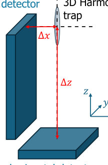
<figcaption class="paper-figure-caption"><b>Fig 1.</b> Figure 1. Schematic setup for measuring the arrival times of an atomic Gaussian wave packet. A metastable atom is initially prepared in the ground state of a three-dimensional harmonic trap (shown here as an ellipsoid). The atom is then released from the trap and observed on a horizontal detector and a vertical detector separated from the trap by distances ∆z and ∆x respectively, as indicated by the red arrows.</figcaption>
</figure>
<figure class="paper-figure-card">
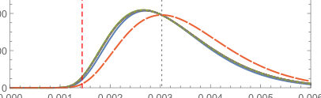
<figcaption class="paper-figure-caption"><b>Fig 2.</b> Figure 3. Same as Fig. 2 for a trapping frequency ωz = 2π × 2000 Hz. The distance of the detector is still ∆z = 3, 20, 40 σx, (from top to bottom panel) which now cor- responds to approximately 0.003, 0.022, 0.044 mm. For ∆z ≥20σx, all predictions (solid curves) are nearly in- distinguishable and well reproduced by the semi-classical flux Eq. (30) shown by the gray dashed curve.</figcaption>
</figure>
<figure class="paper-figure-card">
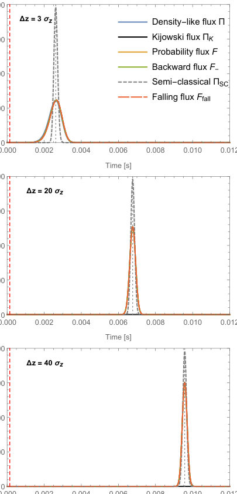
<figcaption class="paper-figure-caption"><b>Fig 3.</b> Figure 2. Arrival-time distributions for an isolated helium- 4 atom detected onto a horizontal planar detector, based on different predictions Eqs. (26-30). For the density- like flux Eq. (26), the coefficient α is set to gtfall. The atom is initially trapped in a harmonic trap with frequency ωz = 2π × 20 Hz and the detector is separated from the trap by a distance ∆z = 3, 20, 40 σx, (from top to bottom panel) corresponding approximately to 0.03, 0.2, 0.4 mm. The gray vertical dotted line indicates the classical fall time tfall Eq. (22), and the red vertical dashed line the time tσ Eq. (21) beyond which the system is in the gravity- dominated regime. All predictions are nearly...</figcaption>
</figure>
<figure class="paper-figure-card">
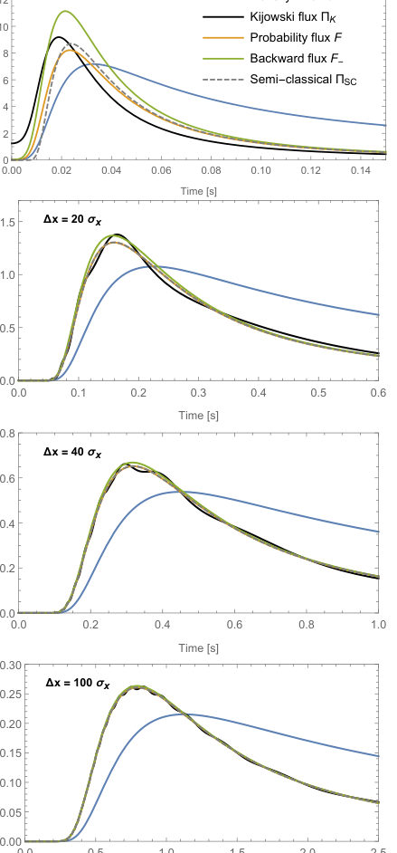
<figcaption class="paper-figure-caption"><b>Fig 4.</b> Figure 4. Arrival-time distributions for an isolated helium- 4 atom detected onto a vertical planar detector, based on the different predictions, Eqs. (34-38). The atom is initially trapped in a harmonic trap with frequency ωx = 2π×20 Hz and the detector is separated from the trap by a distance ∆x = 3, 20, 40, 100 σx, (from top to bottom panel) cor- responding approximately to 0.03, 0.2, 0.4, 1.1 mm. Only the density-like flux (blue curve) differs significantly from the other predictions for large ∆x. It is given by the prob- ability density scaled by an arbitrary coefficient α set here to 1.0 mm/s.</figcaption>
</figure>
<figure class="paper-figure-card">
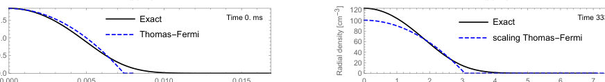
<figcaption class="paper-figure-caption"><b>Fig 5.</b> Figure 5. Density cuts along the axial (x∥) and transverse (x⊥) directions through a cigar-shaped condensate of 104</figcaption>
</figure>
</div>

<p><strong>Summary.</strong> This work investigates how repulsive interactions modify the predicted arrival time distributions for an atomic Bose-Einstein condensate. By solving the Gross-Pitaevskii equation and comparing multiple theoretical fluxes, the authors show that while interactions cause quantitative changes from non-interacting atoms, measuring in specific expansion regimes offers a path to experimentally distinguish between competing quantum measurement theories.</p>
<p><strong>Why it may be interesting.</strong> This paper tackles a fundamental ambiguity in quantum measurement theory—defining particle detection flux near the source—using the highly controllable platform of BECs to test theoretical boundaries.</p>
<details>
<summary>Detailed structure</summary>
<p><strong>Main problem.</strong> The primary challenge is determining the theoretically consistent distribution of arrival times for an atomic Bose-Einstein condensate (BEC) when detected very close to its trapping region.</p>
<p><strong>Main result.</strong> Interactions modify theoretical predictions for arrival time distributions, and measuring arrivals in loose expansion directions allows probing regimes where different quantum theories yield distinct, testable results.</p>
<p><strong>Method.</strong> The authors solve the time-dependent Gross-Pitaevskii equation numerically and analytically to derive various flux formulations (density-like, Kijowski, probability) for comparison.</p>
<p><strong>Model / system.</strong> The system is an atomic BEC governed by the Gross-Pitaevskii equation. The analysis compares results from non-interacting particles against those including repulsive interactions ($g|\psi|^2$).</p>
<p><strong>Key observables.</strong> Arrival-time distribution $\Pi(t)$ onto a detector surface, comparing density flux, Kijowski flux ($\Pi_K$), and probability flux ($F$).</p>
<p><strong>Important parameters / regimes.</strong> The comparison is highly dependent on the detection separation ($\Delta x$ or $\Delta z$) relative to the initial trap size ($\sigma$), especially in the short-distance regime.</p>
<p><strong>Assumptions / limitations.</strong> Approximations include using the scaling Thomas-Fermi method for dynamics and assuming specific forms for quantum flux calculations, though the paper aims to test these limits.</p>
<p><strong>Figures summary.</strong> Figures illustrate arrival-time distributions comparing interacting vs. non-interacting cases, showing convergence towards falling flux at large separations but distinct behavior at small separations.</p>
<p><strong>Paper structure.</strong> The work systematically reviews multiple theoretical approaches for arrival time measurement, first analyzing the general free-fall case with gravity, then extending these analyses to include mean-field interactions via the GPE and scaling approximations.</p>
</details>
<details>
<summary>Abstract</summary>
<p>The times of flight of an atomic Bose-Einstein condensate are theoretically investigated in the experimentally unexplored regime corresponding to detection close to the trap of the condensate. In this regime, there is no consensus on how to calculate the distribution of times of arrival onto the detector. For non-interacting particles, distinct theoretical predictions have been made in the past. This work analyses how these predictions are modified for an interacting Bose-Einstein condensate. For this purpose, a time-dependent Gross-Pitaevskii equation is solved analytically and numerically.</p>
</details>
<p><sub><a href="#top">↑ back to top</a></sub></p>

<p><a id="paper-2606.20294"></a></p>
<h3 id="multi-particle-gates-on-driven-one-dimensional-paths-probing-deep-traps"><a href="http://arxiv.org/abs/2606.20294v1">Multi-particle gates on driven one-dimensional paths: probing deep traps</a></h3>
<p><strong>Authors:</strong> Harsh Jain, Shankar Ghosh, Archishman Raju<br>
<strong>Type:</strong> both · <strong>Category:</strong> statistical mechanics · <strong>PDF:</strong> <a href="https://arxiv.org/pdf/2606.20294v1">https://arxiv.org/pdf/2606.20294v1</a><br>
<strong>Analysis basis:</strong> full PDF text, analyzed in chunks
<strong>Topic relevance:</strong> 🔥 <code>Frenkel-Kontorova</code> <strong>4/5</strong> · 🔥 <code>non-equilibrium dynamics</code> <strong>4/5</strong> · <code>analog quantum simulation</code> <strong>3/5</strong> · <code>driven-dissipative phase transition</code> <strong>3/5</strong> · <code>methods for driven-dissipative</code> <strong>3/5</strong> · <code>non-equilibrium universality</code> <strong>3/5</strong> · <code>correlated / nonlocal dissipation</code> <strong>2/5</strong> · <code>Keldysh / 2PI / non-Gaussian methods</code> <strong>1/5</strong> · <code>Kondo &amp; dissipative impurity</code> <strong>1/5</strong> · <code>entanglement &amp; information structure</code> <strong>1/5</strong> · <code>scars &amp; prethermalization</code> <strong>1/5</strong></p>
<div class="figure-strip-hint">↔ Scroll figures horizontally</div>
<div class="paper-figures-scroll">
<figure class="paper-figure-card">
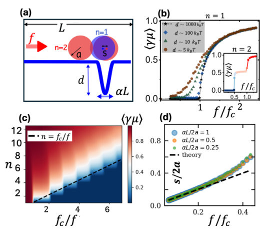
<figcaption class="paper-figure-caption"><b>Fig 1.</b> FIG. 1. (a) shows a periodic potential well (blue) with po- tential depth d and trap size αL, periodicity L and a driving force f along the path. The blue particle represents n = 1 and the two red particles represent n = 2 on the path. (b) shows the variation of particle’s transport efficiency ⟨γµ⟩versus f/fc for a single particle and various potential well depths d. Inset shows the transport efficiency for n = 2 and d = 1000kBT. (c) shows the phase diagram for current ⟨γµ⟩with n parti- cles on the vertical axis and f/fc on the horizontal axis for d = 1000 kBT. Dashed line is n = fc/f. (d) shows the nor- malized shift s/2a in the position of the particle at the edge as a function of f/fc.</figcaption>
</figure>
<figure class="paper-figure-card">
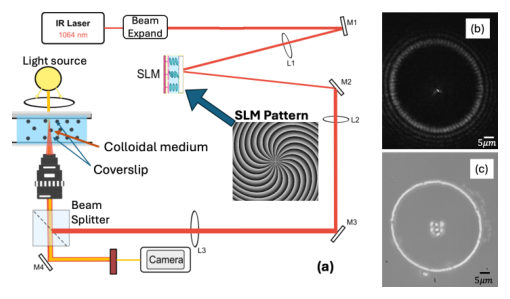
<figcaption class="paper-figure-caption"><b>Fig 2.</b> FIG. 2. (a) shows the experimental setup for the optical tweezer consisting of a spatial light modulator (SLM), mir- rors M1-3 and lenses L1-3, along with the phase pattern of Laguerre Gaussian beam projected on the SLM. (b) shows the optical vortex seen by the camera reflected by the cover- slip. (c) shows a long exposure image (exposure time ∼10s) for particles moving along the circular trap generated by the optical vortex</figcaption>
</figure>
<figure class="paper-figure-card">

<figcaption class="paper-figure-caption"><b>Fig 3.</b> FIG. 3. (a) shows a snapshot of 2 µm particles on a circular trap. (b) shows a long exposure shot of particles overtaking a trapped particle in a wide trap. (c) shows long exposure im- age of a 2 µm particle moving towards a cluster of 3 trapped particles, and (d) shows emission of a particle from the ‘par- ticle gate’ after collision (e) shows the simulation results for C12 xx(0) versus α for particle positions inside the cluster (f) shows the correlation at lag τ for experimental data.</figcaption>
</figure>
<figure class="paper-figure-card">
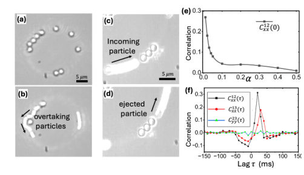
<figcaption class="paper-figure-caption"><b>Fig 4.</b> Fig. 3 shows colloidal particles moving on the optical vortex path and getting stuck in deep potential wells that result from charge heterogeneities. Fig. 3(a) shows the snapshot of particles of diameter 2 µm on a wider opti- cal vortex circumferential path with R ≈10 µm, with exposure time of ∼10 ms and (b) shows a longer expo- sure time of ∼1 s in the same scenario. The particles not stuck in a trap are able to overtake a particle stuck in the trap on the circumferential path with the path width w ≳2a. Fig. 3(c-d) shows particles with diameter ≈2 µm on a narrower section of the circumferential path with R ≈22 µm where w ≲2a. The particles are unable to overtake each other along the path...</figcaption>
</figure>
<figure class="paper-figure-card">
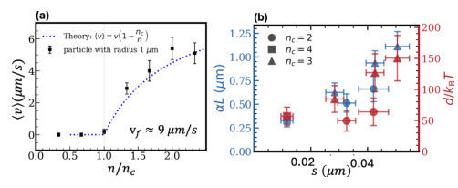
<figcaption class="paper-figure-caption"><b>Fig 5.</b> FIG. 4. (a) shows average velocity ⟨v⟩for particles of diameter 2 µm versus n/nc. (b) shows the measured shift s versus trap size αL (left,blue) and normalized depth d/kBT for the same value of driving force f, for nc = 2, 3, 4 and at different trap locations.</figcaption>
</figure>
</div>

<p><strong>Summary.</strong> The research explores how interacting colloidal particles exhibit collective motion when driven through deep potential traps, mimicking particle-gate physics. By combining Brownian dynamics simulations with optical trapping experiments, the authors demonstrate a sharp transition to finite current only above a critical particle number ($n_c$). This technique allows for the study of highly confined, non-equilibrium transport regimes relevant to molecular or biological systems.</p>
<p><strong>Why it may be interesting.</strong> This work provides a physical platform to study non-equilibrium transport and correlated dynamics, which has analogies in open quantum systems where environmental coupling dictates collective behavior.</p>
<details>
<summary>Detailed structure</summary>
<p><strong>Main problem.</strong> The study investigates single-file transport of colloidal particles driven through periodic potential wells, focusing on how particle interactions induce collective correlated motion.</p>
<p><strong>Main result.</strong> A finite current only appears when the number of particles exceeds a critical threshold ($n_c$), demonstrating a particle-gate-like behavior in deep traps. The technique allows characterizing trap depths inaccessible by standard theoretical methods.</p>
<p><strong>Method.</strong> The work combines overdamped Brownian dynamics simulations with experimental realization using colloidal particles driven by an optical vortex generated via an SLM.</p>
<p><strong>Model / system.</strong> The system models colloidal particles moving on a periodic path under a tilted potential, which is realized experimentally using repulsive electrical double-layer interactions and optically induced driving forces. The theoretical framework involves the overdamped Langevin equation.</p>
<p><strong>Key observables.</strong> Particle current ($\langle\gamma_\mu
angle$), critical cluster size ($n_c$), and particle position shift ($s$).</p>
<p><strong>Important parameters / regimes.</strong> Trap depth (up to several hundred $k_B T$), force ratio ($f/f_c$), and particle number ($n$).</p>
<p><strong>Assumptions / limitations.</strong> The analysis relies on the small trap limit ($\alpha L \le 2a$) for certain approximations, and the experimental setup models interactions using DLVO potentials.</p>
<p><strong>Figures summary.</strong> Figures illustrate potential well geometries, phase diagrams showing current dependence on $n$ and force ratio, and details of the optical vortex generation setup.</p>
<p><strong>Paper structure.</strong> The paper progresses from theoretical modeling of particle-gate behavior in deep traps to detailed experimental implementation using colloidal particles trapped by an optical vortex generated via SLM modulation.</p>
</details>
<details>
<summary>Abstract</summary>
<p>We study single-file transport of driven overdamped colloidal particles on a periodic path with deep potential wells. In the small trap limit (i.e., trap size smaller than particle size), the particle current transitions from zero to finite as the number of particles on the path exceeds a critical number $n_c$. Beyond this threshold, $n_c$ particles cluster behind the trap, demonstrating collective correlated motion. The remaining `extra' particles circulate, giving a finite current. We study this phenomenon numerically using overdamped Brownian dynamics simulations, and present an experimental realization of this behaviour for micron-scale colloidal particles driven in an optical vortex. Using our experimental observations, we present results characterizing potential wells as deep as several hundred $k_BT$.</p>
</details>
<p><sub><a href="#top">↑ back to top</a></sub></p>

<p><a id="paper-2606.19430"></a></p>
<h3 id="solving-nonequilibrium-dynamics-via-influence-matrix-bootstrap-floquet-pxp-model"><a href="http://arxiv.org/abs/2606.19430v1">Solving Nonequilibrium Dynamics via Influence Matrix Bootstrap: Floquet-PXP Model</a></h3>
<p><strong>Authors:</strong> Xiao-Yang Yang, He-Ran Wang, Zhong Wang<br>
<strong>Type:</strong> theory · <strong>Category:</strong> other · <strong>PDF:</strong> <a href="https://arxiv.org/pdf/2606.19430v1">https://arxiv.org/pdf/2606.19430v1</a><br>
<strong>Analysis basis:</strong> full PDF text, analyzed in chunks
<strong>Topic relevance:</strong> 🔥 <code>analog quantum simulation</code> <strong>4/5</strong> · 🔥 <code>methods for driven-dissipative</code> <strong>4/5</strong> · 🔥 <code>non-equilibrium dynamics</code> <strong>4/5</strong> · <code>Rydberg arrays</code> <strong>3/5</strong> · <code>entanglement &amp; information structure</code> <strong>3/5</strong> · <code>non-equilibrium universality</code> <strong>3/5</strong> · <code>scars &amp; prethermalization</code> <strong>2/5</strong> · <code>Keldysh / 2PI / non-Gaussian methods</code> <strong>1/5</strong> · <code>correlated / nonlocal dissipation</code> <strong>1/5</strong> · <code>driven-dissipative phase transition</code> <strong>1/5</strong></p>
<div class="figure-strip-hint">↔ Scroll figures horizontally</div>
<div class="paper-figures-scroll">
<figure class="paper-figure-card">
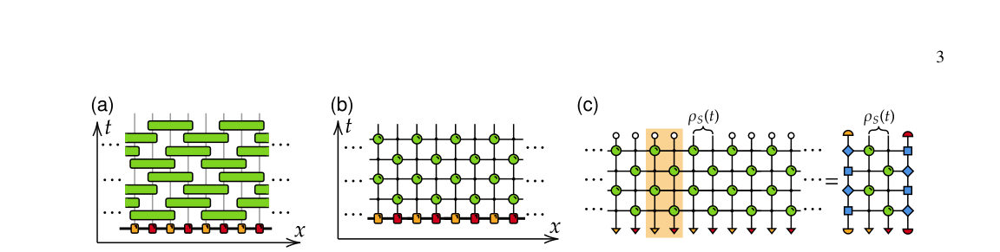
<figcaption class="paper-figure-caption"><b>Fig 1.</b> FIG. 1. Tensor-network representation of the Rule 201 quantum cellular automaton. Time steps t = 2. (a) Brickwork quantum circuit. (b) Rule 201 quantum cellular automaton represented in interactions round-a-face. (c) Dynamics of a local subsystem on two sites, where the rest of the system is traced out and gives rise to influence matrices, represented as matrix product states on two sides. The shaded region is the spatial transfer matrix.</figcaption>
</figure>
<figure class="paper-figure-card">
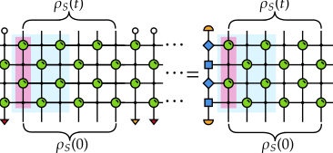
<figcaption class="paper-figure-caption"><b>Fig 2.</b> FIG. 2. Nonequilibrium dynamics in the presence of quantum defects. Local gates in the shaded region are deformed away from the cellular automaton according to Eq. (17). The red region corresponds to the period-three initial state, while the light-blue region corresponds to the period-five initial state. Using the exact solution of the influence matrix, the subsystem dynamics can be computed for arbitrarily long times.</figcaption>
</figure>
<figure class="paper-figure-card">
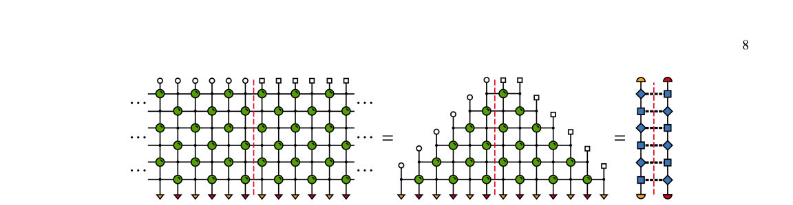
<figcaption class="paper-figure-caption"><b>Fig 3.</b> FIG. 4. Schematic of the R´enyi-n entropy calculation. Time steps t = 3. The red dashed line indicates the location of the bipartition. The black dashed lines on the right-hand side indicate the contraction for the n-layer folded tensors A and B, as defined in Eqs. (24) and (25).</figcaption>
</figure>
<figure class="paper-figure-card">
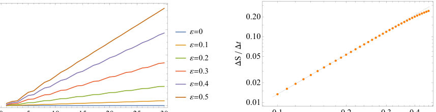
<figcaption class="paper-figure-caption"><b>Fig 4.</b> FIG. 5. Dependence of the bipartite R´enyi-2 entropy on time and parameter ε. The left panel shows the entropy growth in time. The right panel shows the quantity (S(t = 30) −S(t = 15))/15 as a function of ε, with the gray line 4ε2/3 shown for reference.</figcaption>
</figure>
<figure class="paper-figure-card">
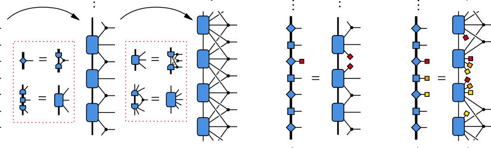
<figcaption class="paper-figure-caption"><b>Fig 5.</b> FIG. 6. (a) The transformation from a matrix product state to split-index matrix product states with three and five physical indices in each tensor. (b,c) Measurements can reduce the bond dimension, as captured by the structure of the split-index matrix product states.</figcaption>
</figure>
</div>

<p><strong>Summary.</strong> This paper tackles the difficult problem of simulating nonequilibrium quantum dynamics in integrable systems using the influence matrix formalism. By developing generalized zipper conditions and a numerical bootstrap method, the authors provide an exact framework to calculate time evolution for models like the Rule 201 QCA. This allows for detailed study of phenomena such as entanglement growth and memory structure separation.</p>
<p><strong>Why it may be interesting.</strong> This work provides powerful, mathematically rigorous tools (generalized zipper conditions) to analyze non-equilibrium quantum dynamics that are often intractable, directly connecting theoretical concepts to experimental platforms like Rydberg arrays.</p>
<details>
<summary>Detailed structure</summary>
<p><strong>Main problem.</strong> The primary challenge addressed is accurately characterizing nonequilibrium integrable dynamics in quantum many-body systems, which remains difficult even when equilibrium properties are well understood.</p>
<p><strong>Main result.</strong> The authors developed a framework using influence matrices and generalized zipper conditions to find exact solutions for local dynamics, enabling the unified study of both thermalizing and nonthermalizing regimes.</p>
<p><strong>Method.</strong> The core methodology involves employing the tensor-network approach via influence matrices, developing 'generalized zipper conditions' for exact solvability, and utilizing a numerical bootstrap method to solve these complex constraints.</p>
<p><strong>Model / system.</strong> The study focuses on the "Rule 201" quantum cellular automaton (QCA), which is an integrable Trotterization of the PXP Hamiltonian. The theory is designed to be testable on state-of-the-art platforms like Rydberg atom arrays.</p>
<p><strong>Key observables.</strong> Entanglement growth, reduced density matrix evolution ($
ho_S(t)$), and multitime correlations characterized by a 'hidden Markov order'.</p>
<p><strong>Important parameters / regimes.</strong> The bond dimension ($\chi$) of the influence matrix is critical; the analysis explores regimes where $\chi$ remains finite.</p>
<p><strong>Assumptions / limitations.</strong> The method assumes that the relevant influence matrices admit an exact, finite-bond-dimension Matrix Product State (MPS) representation at long times for solvability.</p>
<p><strong>Figures summary.</strong> Figures illustrate tensor network representations of the QCA circuit, time evolution under local perturbations (quantum defects), and the calculation of Rényi entropy using specialized tensor structures like SIMPS.</p>
<p><strong>Paper structure.</strong> The paper progresses by first establishing the theoretical framework (influence matrices, zipper conditions) for solving the dynamics. It then applies this to specific models (Rule 201/PXP), analyzing observables like entanglement and memory structure, culminating in a discussion of numerical implementation via bootstrap techniques.</p>
</details>
<details>
<summary>Abstract</summary>
<p>Studies of integrable systems have profoundly deepened the fundamental understanding of quantum many-body physics. While equilibrium properties such as ground states and thermodynamics can often be characterized efficiently, accurately characterizing nonequilibrium integrable dynamics remains a significant challenge. Here, we address this problem in the "Rule 201" quantum cellular automaton, an integrable Trotterization of the PXP Hamiltonian. Using the tensor-network approach of the influence matrix, we develop local conditions called generalized zipper conditions that allow exact solutions of local dynamics. We also introduce a numerical bootstrap method for solving influence matrices with finite but relatively large bond dimensions. This uncovers a rich landscape of nonequilibrium behavior exhibiting initial-state dependence. As an example, we investigate the fate of persistent oscillating dynamics under local non-integrable perturbations, and present analytical results for non-thermal relaxation constrained by conservation laws. We also obtain numerically exact results for entanglement growth across a broad class of initial states. Furthermore, from an information-theoretic perspective, we identify a refined structure of multitime correlations termed the hidden Markov order: the memory encoded in the dynamics separates into finite-length and long-range distributed components, which becomes transparent in an exact split-index matrix-product-state representation of the influence matrix. Our approach enables unified investigations of nonthermalizing and thermalizing regimes of nonequilibrium dynamics within a single analytically tractable model, and can be tested experimentally in state-of-the-art quantum simulators such as Rydberg atom arrays.</p>
</details>
<p><sub><a href="#top">↑ back to top</a></sub></p>

<p><a id="paper-2606.20313"></a></p>
<h3 id="entanglement-structure-of-the-dynamical-phases-in-the-sub-ohmic-spin-boson-model"><a href="http://arxiv.org/abs/2606.20313v1">Entanglement structure of the dynamical phases in the sub-Ohmic spin-boson model</a></h3>
<p><strong>Authors:</strong> Cunxi Gong, Zirui Sheng, Weitang Li<br>
<strong>Type:</strong> theory · <strong>Category:</strong> other · <strong>PDF:</strong> <a href="https://arxiv.org/pdf/2606.20313v1">https://arxiv.org/pdf/2606.20313v1</a><br>
<strong>Analysis basis:</strong> full PDF text, analyzed in chunks
<strong>Topic relevance:</strong> 🔥 <code>entanglement &amp; information structure</code> <strong>4/5</strong> · 🔥 <code>methods for driven-dissipative</code> <strong>4/5</strong> · <code>correlated / nonlocal dissipation</code> <strong>3/5</strong> · <code>driven-dissipative phase transition</code> <strong>3/5</strong> · <code>exotic spin models in light-matter</code> <strong>3/5</strong> · <code>non-equilibrium dynamics</code> <strong>2/5</strong> · <code>non-equilibrium universality</code> <strong>2/5</strong> · <code>Keldysh / 2PI / non-Gaussian methods</code> <strong>1/5</strong> · <code>Kondo &amp; dissipative impurity</code> <strong>1/5</strong> · <code>analog quantum simulation</code> <strong>1/5</strong> · <code>spintronics-quantum-optics interface</code> <strong>1/5</strong></p>
<div class="figure-strip-hint">↔ Scroll figures horizontally</div>
<div class="paper-figures-scroll">
<figure class="paper-figure-card">
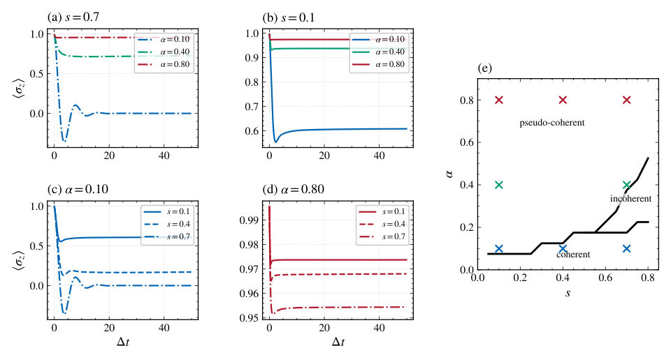
<figcaption class="paper-figure-caption"><b>Fig 1.</b> Figure 1: Spin polarization dynamics and population-based phase diagram of the sub-Ohmic spin-boson model. Panels (a) and (b) show the evolution of ⟨σz(t)⟩at fixed s with in- creasing coupling strength α, illustrating the crossover from coherent to incoherent and pseudo-coherent dynamics. Panels (c) and (d) show trajectories at fixed α with increasing s, demonstrating the recovery of coherent behavior at larger spectral exponents. Panel (e) shows the resulting phase diagram over the (s, α) parameter space at ωc = 10∆; the three regions correspond to coherent, incoherent, and pseudo-coherent spin polarization dynamics. The crosses mark the representative parameter points used in panels...</figcaption>
</figure>
<figure class="paper-figure-card">
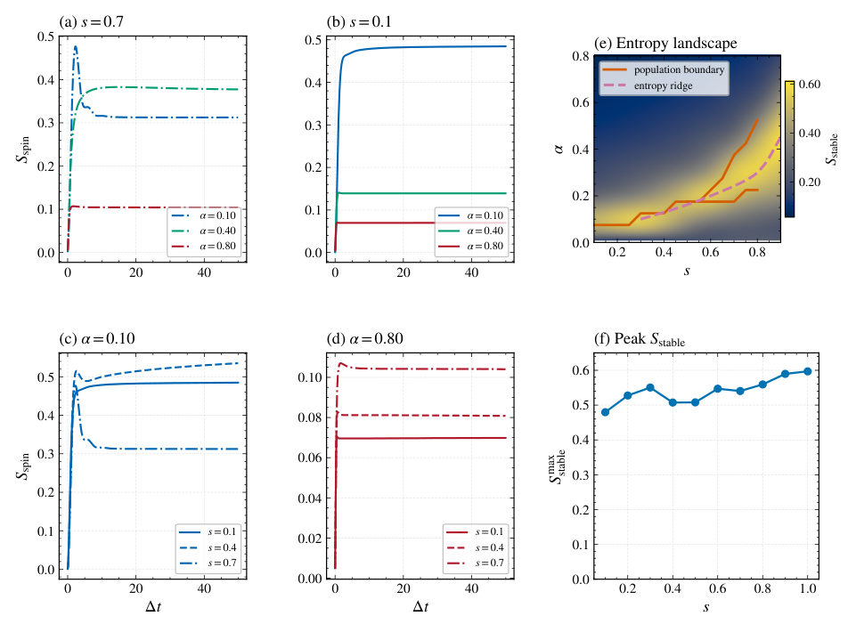
<figcaption class="paper-figure-caption"><b>Fig 2.</b> Figure 2: Spin entanglement entropy dynamics and stationary entropy landscape. Panels (a)–(d) show the spin entanglement entropy Sspin(t) for representative parameter sets, ob- tained from the reduced density matrix of the spin subsystem. Most trajectories rapidly approach a stationary plateau after an initial transient. Panel (e) shows the stationary en- tropy landscape: the color map represents the stationary spin entanglement entropy Sstable over the (s, α) parameter space. The red line denotes the population-based dynamical phase boundaries determined from ⟨σz(t)⟩, while the purple dashed line traces the fixed-α ridge sridge(α) = arg maxs Sstable(s, α). Panel (f) shows Smax stable(s) =...</figcaption>
</figure>
<figure class="paper-figure-card">
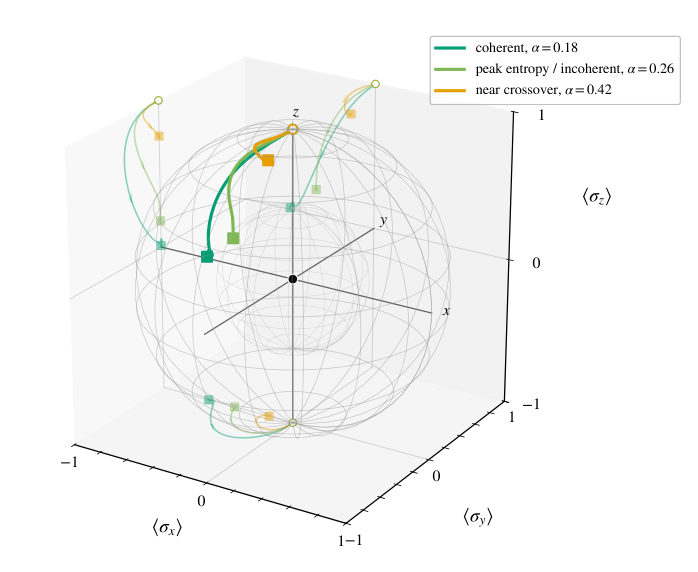
<figcaption class="paper-figure-caption"><b>Fig 3.</b> Figure 3: Representative three-dimensional Bloch trajectories at s = 0.7. The solid outer wireframe is the pure-state Bloch sphere (r = 1, Sspin = 0), and the lighter inner shell marks r ≃0.48, close to the smallest stationary radius among the s = 0.7 trajectories (maximum Sspin). The black dot marks the origin (r = 0), so the distance from this point gives the instantaneous Bloch radius. Open circles mark the initial state and squares mark the terminal points.</figcaption>
</figure>
<figure class="paper-figure-card">
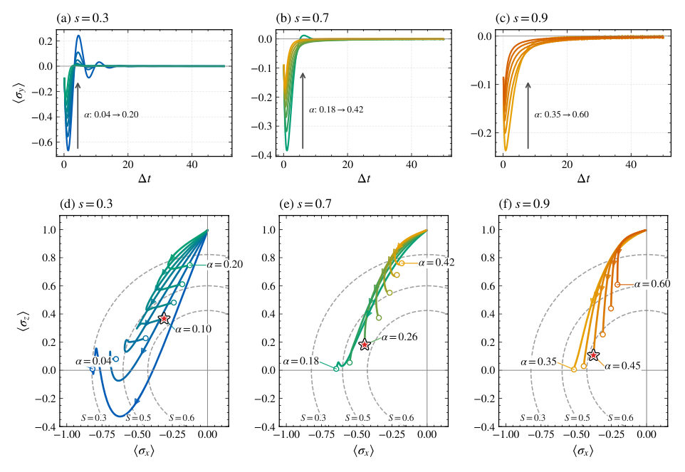
<figcaption class="paper-figure-caption"><b>Fig 4.</b> Figure 4: Tunneling current and Bloch-sphere trajectories across the dynamical crossover. Panels (a)–(c) show the tunneling current ⟨σy(t)⟩for representative coupling strengths at fixed s (α = 0.04–0.20 for s = 0.3, α = 0.18–0.42 for s = 0.7, and α = 0.35–0.60 for s = 0.9). Panels (d)–(f) show the corresponding projected trajectories in the (⟨σx⟩, ⟨σz⟩) plane; dashed circles indicate constant spin entanglement entropy contours. The red star marks the fixed-s peak-entropy trajectory. Color encodes coupling strength α within each panel, progressing from weak (cool) to strong (warm) coupling.</figcaption>
</figure>
<figure class="paper-figure-card">
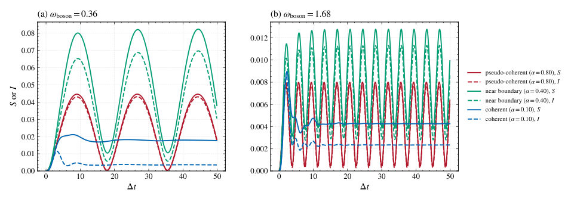
<figcaption class="paper-figure-caption"><b>Fig 5.</b> Figure 5: Mode-resolved environmental entanglement in representative dynamical regimes at s = 0.7. Panels (a) and (b) show the mode entanglement entropy S (solid) and the spin– boson-mode mutual information I (dashed), computed from the spin–mode 2-body entropy, for a low-frequency mode (ωboson ≈0.36) and a higher-frequency mode (ωboson ≈1.68), respectively. In the pseudo-coherent and near-boundary non-coherent cases, both quantities exhibit periodic oscillations whose magnitudes are close, indicating that the mode is primarily correlated with the spin.</figcaption>
</figure>
</div>

<p><strong>Summary.</strong> The paper investigates the entanglement structure of the sub-Ohmic spin-boson model across different dynamical phases. Using advanced tensor network simulations, the authors map the stationary spin entanglement entropy landscape against known population phase boundaries. They find that while entanglement is a powerful diagnostic tool, its scalar representation fails to capture all structural details seen in classical population dynamics.</p>
<p><strong>Why it may be interesting.</strong> This work provides a quantitative link between macroscopic dynamical classifications (like coherence regimes) and microscopic quantum information measures (entanglement), which is crucial for understanding dissipation in open quantum systems relevant to quantum computing and molecular physics.</p>
<details>
<summary>Detailed structure</summary>
<p><strong>Main problem.</strong> The study aims to determine if the distinct dynamical regimes (coherent, incoherent, pseudo-coherent) observed in the sub-Ohmic spin-boson model correspond to unique entanglement structures between the spin and its environment.</p>
<p><strong>Main result.</strong> The stationary spin entanglement entropy landscape broadly follows population-based phase boundaries at small coupling strengths but fails to reproduce the expected two-branch structure at large couplings, suggesting a limitation in using scalar entropy alone for full characterization.</p>
<p><strong>Method.</strong> The authors employed Tree Tensor Network States (TTNS) combined with projector-splitting time evolution (TDVP-PS) to simulate the system dynamics and calculate various entanglement measures over parameter space scans.</p>
<p><strong>Model / system.</strong> The physical model is the Spin-Boson Model, describing a two-level quantum system coupled linearly to an environment characterized by a sub-Ohmic spectral density function. The Hamiltonian governs the interaction between the spin and the bosonic bath modes.</p>
<p><strong>Key observables.</strong> Spin entanglement entropy ($S_{	ext{spin}}(t)$), stationary spin entanglement entropy landscape ($S_{	ext{stable}}$), Bloch vector trajectory, and mode-resolved bath entanglement.</p>
<p><strong>Important parameters / regimes.</strong> The sub-Ohmic spectral exponent ($s$) and the coupling strength ($\alpha$), which define the environmental interaction regime.</p>
<p><strong>Assumptions / limitations.</strong> The analysis relies on projecting the dynamics onto a variational manifold using TTNS methods, and it assumes that the stationary entropy landscape provides sufficient information to classify dynamical regimes.</p>
<p><strong>Figures summary.</strong> Figures illustrate the time evolution of spin polarization ($\langle\sigma_z(t)
angle$) defining phase boundaries, alongside plots showing the stationary entanglement entropy landscape ($S_{	ext{stable}}$) as a function of $(s, \alpha)$, and projected Bloch trajectories in the $(\langle\sigma_x
angle, \langle\sigma_z
angle)$ plane.</p>
<p><strong>Paper structure.</strong> The paper first establishes the physical model (Spin-Boson Model) and the dynamical classification based on population observables. It then introduces advanced numerical techniques (TTNS/TDVP-PS) to calculate entanglement measures. The core of the work involves mapping the stationary entanglement entropy landscape, comparing its structure against known population phase boundaries, and performing mode-resolved analysis.</p>
</details>
<details>
<summary>Abstract</summary>
<p>The sub-Ohmic spin-boson model exhibits three distinct dynamical regimes in its spin population dynamics, classified as coherent, incoherent, and pseudo-coherent. Whether these regimes correspond to distinct spin-bath entanglement structures remains an open question. Here we address this using tree tensor network states with projector-splitting time evolution (TTN-TDVP-PS), scanning a broad grid in the sub-Ohmic $(s, α)$ plane. We find that the spin entanglement entropy $S_\mathrm{spin}(t)$ reaches a stationary plateau on a timescale shorter than the polarization relaxation, enabling construction of a stationary entropy landscape from the stationary value $S_\mathrm{stable}$. Within this scalar entropy landscape, the entropy ridge broadly follows the population-based phase boundary at small $s$, but does not reproduce the two-branch structure at large $s$. The ridge remains single-valued within the incoherent region rather than separately tracking both population-based transitions. The Bloch-sphere representation provides a geometric interpretation of this behavior. The entropy plateau corresponds to trajectories settling onto constant-radius shells, with the ridge marking the parameters of smallest stationary Bloch radius. Mode-resolved bath entanglement shows that low-frequency modes dominate the environmental entropy scale and that coherent dynamics enhance bath-mode correlations beyond direct spin--mode correlations. These results establish the stationary spin entanglement entropy as a physically informative observable that complements population-based classifications of dissipative quantum dynamics.</p>
</details>
<p><sub><a href="#top">↑ back to top</a></sub></p>

<p><a id="paper-2606.20535"></a></p>
<h3 id="near-optimal-learning-of-local-lindbladians"><a href="http://arxiv.org/abs/2606.20535v1">Near-Optimal Learning of Local Lindbladians</a></h3>
<p><strong>Authors:</strong> Itai Arad, Zhili Chen, Naixu Guo, Patrick Rebentrost, Zhan Yu<br>
<strong>Type:</strong> theory · <strong>Category:</strong> quantum information and computing · <strong>PDF:</strong> <a href="https://arxiv.org/pdf/2606.20535v1">https://arxiv.org/pdf/2606.20535v1</a><br>
<strong>Analysis basis:</strong> full PDF text, analyzed in chunks
<strong>Topic relevance:</strong> 🔥 <code>methods for driven-dissipative</code> <strong>4/5</strong> · <code>Keldysh / 2PI / non-Gaussian methods</code> <strong>3/5</strong> · <code>correlated / nonlocal dissipation</code> <strong>3/5</strong> · <code>driven-dissipative phase transition</code> <strong>3/5</strong> · <code>entanglement &amp; information structure</code> <strong>2/5</strong> · <code>non-equilibrium dynamics</code> <strong>2/5</strong> · <code>non-equilibrium universality</code> <strong>2/5</strong> · <code>Kondo &amp; dissipative impurity</code> <strong>1/5</strong> · <code>analog quantum simulation</code> <strong>1/5</strong> · <code>measurement-induced transitions</code> <strong>1/5</strong> · <code>quantum measurements</code> <strong>1/5</strong> · <code>scars &amp; prethermalization</code> <strong>1/5</strong></p>
<div class="figure-strip-hint">↔ Scroll figures horizontally</div>
<div class="paper-figures-scroll">
<figure class="paper-figure-card">
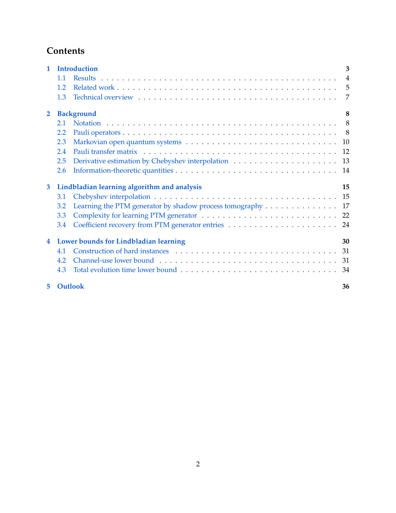
<figcaption class="paper-figure-caption"><b>Fig 1.</b> Low-resolution page preview, page 2</figcaption>
</figure>
<figure class="paper-figure-card">
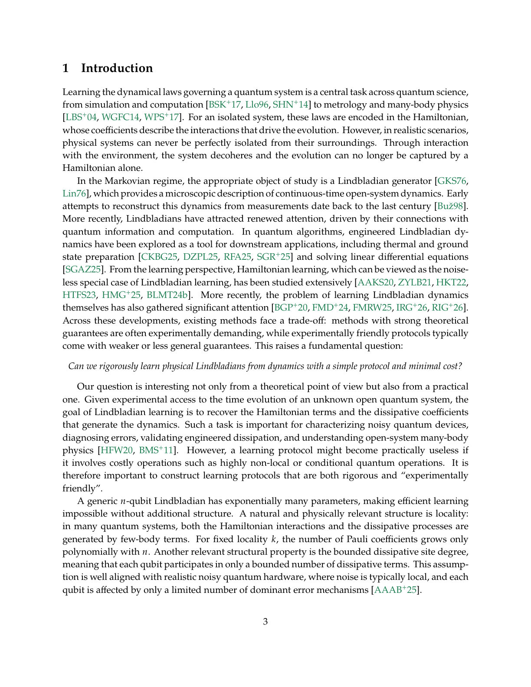
<figcaption class="paper-figure-caption"><b>Fig 2.</b> Low-resolution page preview, page 3</figcaption>
</figure>
<figure class="paper-figure-card">
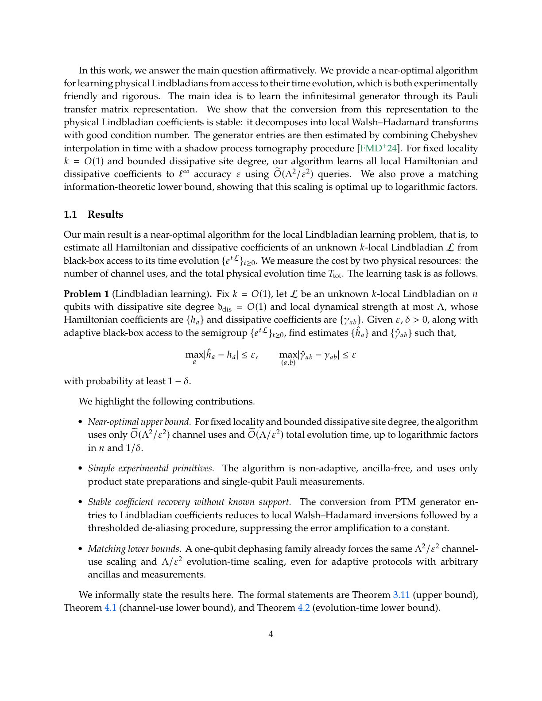
<figcaption class="paper-figure-caption"><b>Fig 3.</b> Low-resolution page preview, page 4</figcaption>
</figure>
<figure class="paper-figure-card">

<figcaption class="paper-figure-caption"><b>Fig 4.</b> Low-resolution page preview, page 5</figcaption>
</figure>
<figure class="paper-figure-card">

<figcaption class="paper-figure-caption"><b>Fig 5.</b> Low-resolution page preview, page 6</figcaption>
</figure>
</div>

<p><strong>Summary.</strong> This paper presents a near-optimal algorithm to learn the coefficients of a local Lindbladian generator describing open quantum system evolution. By combining shadow tomography with spectral differentiation and Fourier inversion, they achieve resource scaling that matches established information-theoretic lower bounds. This work is crucial as it quantifies the fundamental limits on characterizing noise processes in quantum computation.</p>
<p><strong>Why it may be interesting.</strong> This work provides rigorous resource estimates for characterizing open quantum dynamics, establishing fundamental limits that distinguish between Hamiltonian learning (Heisenberg limit) and full Lindbladian estimation (Standard Quantum Limit).</p>
<details>
<summary>Detailed structure</summary>
<p><strong>Main problem.</strong> The primary goal is to estimate all Hamiltonian and dissipative coefficients that define a local Lindbladian generator ($\mathcal{L}$) from black-box access to the system's time evolution.</p>
<p><strong>Main result.</strong> The authors provide an algorithm achieving near-optimal scaling, matching information-theoretic lower bounds for both channel uses ($\Omega(\Lambda^2/\epsilon^2)$) and total evolution time ($\Omega(\Lambda/\epsilon^2)$).</p>
<p><strong>Method.</strong> The method combines shadow process tomography to estimate finite-time Pauli transfer matrices (PTMs), followed by Chebyshev interpolation in time, and finally stable local Fourier inversions (Walsh–Hadamard transforms) to recover the Lindbladian coefficients.</p>
<p><strong>Model / system.</strong> The system is an open quantum system evolving under a Markovian process governed by a $k$-local Lindbladian $\mathcal{L}$. The analysis focuses on systems with bounded local dynamical strength ($\lambda_{	ext{loc}} \le \Lambda$).</p>
<p><strong>Key observables.</strong> Pauli transfer matrices (PTMs), Lindbladian coefficients ($\{h_a\}, \{\gamma_{ab}\}$), and the time-evolved quantum state $\mathcal{E}_t(
ho)$.</p>
<p><strong>Important parameters / regimes.</strong> Local dynamical strength bound ($\Lambda$), target accuracy ($\epsilon$), number of qubits ($n$), and locality ($k$).</p>
<p><strong>Assumptions / limitations.</strong> The Lindbladian is assumed to be $k$-local with a bounded local dynamical strength $\Lambda$. The algorithm requires non-adaptive measurements using only random product states.</p>
<p><strong>Figures summary.</strong> Not specified in the notes, but the structure implies showing algorithmic steps (Algorithm 1/2) and theoretical bounds (Theorems 1.1, 4.1, etc.).</p>
<p><strong>Paper structure.</strong> The paper develops an upper bound algorithm using shadow tomography and interpolation to estimate PTMs, followed by a coefficient recovery step using local Fourier inversion. This is complemented by deriving matching lower bounds using relative entropy arguments on hard instances (like one-qubit dephasing).</p>
</details>
<details>
<summary>Abstract</summary>
<p>We study the problem of learning local Lindbladians from black-box access to the physical evolution, and the goal is to estimate all Hamiltonian and dissipative coefficients. We give an algorithm built directly from finite-time channel probes, which runs the unknown evolution for short times, estimates the corresponding Pauli transfer matrices from classical shadows, and converts these estimates into Lindbladian coefficients by stable local Fourier inversions. For fixed locality and bounded dissipative site degree, the uses of the dynamical evolution and total evolution time scale as $\widetilde{O}(Λ^2/\varepsilon^2)$ and $\widetilde{O}(Λ/\varepsilon^2)$ respectively, in the local dynamical strength bound $Λ$ and target accuracy $\varepsilon$, with only logarithmic dependence on the number of qubits. The algorithm is non-adaptive, uses no ancillas, and uses only random product states as inputs followed by random Pauli measurements. The method does not require knowing the support of the Lindbladian in advance. We complement the algorithm with matching lower bounds, showing that the learning algorithm is near-optimal both in physical dynamics accesses and in total evolution time. We construct a single-qubit dephasing Lindbladian family that already requires $Ω(Λ^2/\varepsilon^2)$ channel uses and $Ω(Λ/\varepsilon^2)$ total evolution time, even for adaptive algorithms with arbitrary ancillas and measurements. In particular, the lower bounds imply that the Heisenberg-limited scaling achievable for Hamiltonian learning is information-theoretically impossible once dissipative coefficients must be estimated.</p>
</details>
<p><sub><a href="#top">↑ back to top</a></sub></p>

<p><a id="paper-2606.19437"></a></p>
<h3 id="many-body-protection-of-topological-edge-memory-in-strong-interacting-quenches"><a href="http://arxiv.org/abs/2606.19437v1">Many-Body Protection of Topological Edge Memory in Strong Interacting Quenches</a></h3>
<p><strong>Authors:</strong> Yuxiao Hang, Stephan Haas, Rishabh Jha<br>
<strong>Type:</strong> theory · <strong>Category:</strong> statistical mechanics · <strong>PDF:</strong> <a href="https://arxiv.org/pdf/2606.19437v1">https://arxiv.org/pdf/2606.19437v1</a><br>
<strong>Analysis basis:</strong> full PDF text, analyzed in chunks
<strong>Topic relevance:</strong> 🔥 <code>analog quantum simulation</code> <strong>4/5</strong> · 🔥 <code>non-equilibrium dynamics</code> <strong>4/5</strong> · <code>non-equilibrium universality</code> <strong>3/5</strong> · <code>entanglement &amp; information structure</code> <strong>2/5</strong> · <code>methods for driven-dissipative</code> <strong>2/5</strong> · <code>scars &amp; prethermalization</code> <strong>2/5</strong> · <code>Keldysh / 2PI / non-Gaussian methods</code> <strong>1/5</strong> · <code>correlated / nonlocal dissipation</code> <strong>1/5</strong> · <code>driven-dissipative phase transition</code> <strong>1/5</strong> · <code>exotic spin models in light-matter</code> <strong>1/5</strong></p>
<div class="figure-strip-hint">↔ Scroll figures horizontally</div>
<div class="paper-figures-scroll">
<figure class="paper-figure-card">

<figcaption class="paper-figure-caption"><b>Fig 1.</b> Figure 2: Schematic of the four quench protocols. Each arrow represents a strong quench from a topological ini- tial ground state at δi = −0.95 to dynamics generated by a final Hamiltonian at δf = 0.95, with SP or MB char- acter determined by whether Ji,f z vanishes. The labels δi and δf refer to the equilibrium phase diagram of the Hamiltonians, not to a topological classification of the time-evolved state.</figcaption>
</figure>
<figure class="paper-figure-card">

<figcaption class="paper-figure-caption"><b>Fig 2.</b> Figure 2 shows the four quench protocols schemati- cally; the two qualitative classes identified above and es- tablished in this work organize the entire analysis. a. Free post-quench class (SP→SP and MB→SP). In the SP→SP quench the dynamics is solved exactly by a correlation-matrix approach, benchmarked against ex- act diagonalization to machine precision. The boundary- mode return amplitude decays asymptotically as t−3/2, with a dimerization-dependent envelope time and beat period computed analytically; this fixes the intrinsic re- laxation scale of the free boundary dynamics and pro- vides the quantitative reference for all other protocols. In the MB→SP quench we prove that the edge...</figcaption>
</figure>
<figure class="paper-figure-card">

<figcaption class="paper-figure-caption"><b>Fig 3.</b> Figure 1: Model and equilibrium phase diagram. (a) Chain geometry. (b) Ground-state phase diagram; pa- rameters used in this work are indicated.</figcaption>
</figure>
<figure class="paper-figure-card">

<figcaption class="paper-figure-caption"><b>Fig 4.</b> Figure 3: Benchmark of the exact boundary-return ampli- tude for the SP →SP quench with L = 200, δi = −0.95, and δf = +0.95. Since both |ϕL⟩and |A1⟩are real vectors and H(1) f is a real symmetric matrix, AL(t) is real for all t (see Theorem 1), so |AL(t)| = |Re AL(t)| and the mod- ulus comparison is unambiguous. The upper panel com- pares |AL(t)| obtained from the exact semi-infinite inte- gral representation, Eq. (11)–(12), with direct propaga- tion of the initial left boundary mode, Eq. (10), on the fi- nite open chain of length L = 200. The lower panel shows two error measures over the full interval 0 ≤t ≤200: the modulus difference |AL(t)| −|Afin L (t)| and the real- part difference...</figcaption>
</figure>
<figure class="paper-figure-card">

<figcaption class="paper-figure-caption"><b>Fig 5.</b> Figure 4: Benchmark of the large-time asymptotic for- mula for the SP →SP quench with L = 200, δi = −0.95, and δf = +0.95. The upper panel compares the ex- act amplitude |AL(t)| with the leading asymptotic ap- proximation |Aasymp L (t)| from Eq. (16) over the interval 20 ≤t ≤2000. The middle panel shows the absolute er- ror |AL(t)−Aasymp L (t)|. The lower panel shows the scaled quantities t3/2AL(t) and t3/2Aasymp L (t) over the late-time window 800 ≤t ≤1800. The bounded oscillatory behav- ior in the lower panel is the numerical signature of the asymptotic law AL(t) = O(t−3/2).</figcaption>
</figure>
</div>

<p><strong>Summary.</strong> The paper explores how topological memory survives when a quantum system undergoes a quench into an interacting environment. By comparing single-particle and many-body evolution regimes, the authors rigorously prove that interactions actively protect this boundary memory over extended time scales. This reveals a fundamental 'many-body protection mechanism' in non-integrable systems.</p>
<p><strong>Why it may be interesting.</strong> This work provides rigorous analytical proof of topological protection mechanisms in strongly correlated, non-integrable systems far from equilibrium, which is a major frontier in quantum dynamics research relevant to condensed matter theory.</p>
<details>
<summary>Detailed structure</summary>
<p><strong>Main problem.</strong> The study investigates whether topological memory encoded in an initial quantum state survives non-equilibrium evolution (quantum quenches) within strongly interacting, non-integrable many-body systems.</p>
<p><strong>Main result.</strong> Interactions in the final Hamiltonian provide a 'many-body protection mechanism,' markedly extending the finite-time retention of boundary topological memory beyond what is predicted by free or single-particle dynamics.</p>
<p><strong>Method.</strong> The analysis combines exact analytical solutions for non-interacting limits (using correlation matrices) with deriving finite-time stability bounds and employing perturbative techniques to construct dressed, approximately conserved operators in interacting regimes.</p>
<p><strong>Model / system.</strong> The system is a bond-alternating XXZ spin chain modeled by an SSH-like Hamiltonian. Quenches are analyzed from a topologically non-trivial initial state ($\delta_i < 0$) to various final states ($\delta_f$), covering both free and genuinely interacting post-quench Hamiltonians.</p>
<p><strong>Key observables.</strong> Topological boundary memory, specifically the first-dimer magnetization $\langle S_{z1} 
angle$, and the boundary-mode return amplitude $A_L(t)$.</p>
<p><strong>Important parameters / regimes.</strong> The distinction between free vs. genuinely interacting post-quench Hamiltonians; the dimerization parameter ($\delta$); and the small coupling strength ($\epsilon$) used in perturbative analysis.</p>
<p><strong>Assumptions / limitations.</strong> The structure of the study is fundamentally organized around classifying the quench based on whether the final Hamiltonian ($H_f$) is free (quadratic) or genuinely interacting (many-body).</p>
<p><strong>Figures summary.</strong> Figures benchmark the boundary-mode return amplitude decay, showing $t^{-3/2}$ for free dynamics. Other figures compare numerical results against analytical bounds derived from perturbative corrections to conserved charges.</p>
<p><strong>Paper structure.</strong> The paper systematically analyzes four quench protocols (SP$   o$SP, MB$    o$SP, SP$    o$MB, MB$    o$MB), first establishing exact results for the non-interacting case ($J_z=0$) and then using stability bounds and dressed operator constructions to prove memory retention in the interacting many-body limit.</p>
</details>
<details>
<summary>Abstract</summary>
<p>Quantum quenches drive edge states far from equilibrium, yet whether the memory of a topological initial state survives in a non-integrable, interacting system has remained largely unexplored. We study this question in the bond-alternating XXZ chain -- an interacting Su--Schrieffer--Heeger model hosting symmetry-protected topological edge modes with markedly enhanced boundary magnetization -- and analyze quenches across all combinations of single-particle and many-body initial and final Hamiltonians. The results organize by a single distinction as we rigorously establish in this work: whether the post-quench Hamiltonian is free or genuinely interacting. For a free post-quench Hamiltonian, the dynamics is solved exactly by a correlation-matrix approach; the boundary-mode return amplitude decays as $t^{-3/2}$, and initial interactions enter only through a dressed one-body density matrix. For a genuinely interacting post-quench Hamiltonian, finite-time stability bounds prove that away from local resonances the first-dimer magnetization remains stable on time windows growing as arbitrarily large powers of the inverse inter-dimer coupling. Matrix product state simulations across all four protocols show that interactions in the final Hamiltonian markedly extend finite-time boundary memory -- with local suppression near the isotropic $SU(2)$ point -- revealing a many-body protection mechanism in a non-integrable system where scrambling would otherwise wash out initial-state memory fast.</p>
</details>
<p><sub><a href="#top">↑ back to top</a></sub></p>

<p><a id="paper-2606.19786"></a></p>
<h3 id="robust-generation-of-topological-biphoton-mode-via-adiabatic-passage"><a href="http://arxiv.org/abs/2606.19786v1">Robust Generation of Topological Biphoton Mode via Adiabatic Passage</a></h3>
<p><strong>Authors:</strong> Jaesung Lim, Jihwan Kim, Dong-Gil Im, Kyungdeuk Park, Dongkyu Kim, Yonggi Jo, Yong Sup Ihn<br>
<strong>Type:</strong> theory · <strong>Category:</strong> quantum information and computing · <strong>PDF:</strong> <a href="https://arxiv.org/pdf/2606.19786v1">https://arxiv.org/pdf/2606.19786v1</a><br>
<strong>Analysis basis:</strong> full PDF text, analyzed in chunks
<strong>Topic relevance:</strong> 🔥 <code>analog quantum simulation</code> <strong>4/5</strong> · <code>interference shaping light</code> <strong>3/5</strong> · <code>driven-dissipative phase transition</code> <strong>2/5</strong> · <code>entanglement &amp; information structure</code> <strong>2/5</strong> · <code>methods for driven-dissipative</code> <strong>2/5</strong> · <code>non-equilibrium dynamics</code> <strong>2/5</strong> · <code>Frenkel-Kontorova</code> <strong>1/5</strong> · <code>QC/QI experiment</code> <strong>1/5</strong> · <code>correlated cavity matter</code> <strong>1/5</strong> · <code>exotic spin models in light-matter</code> <strong>1/5</strong> · <code>non-equilibrium universality</code> <strong>1/5</strong> · <code>quantum optics experiment</code> <strong>1/5</strong></p>
<div class="figure-strip-hint">↔ Scroll figures horizontally</div>
<div class="paper-figures-scroll">
<figure class="paper-figure-card">

<figcaption class="paper-figure-caption"><b>Fig 1.</b> FIG. 1. Concept of topological biphoton generation via adi- abatic passage in a silicon waveguide array. (a) Schematic of the adiabatic connection from an isolated-waveguide ar- ray to a topological lattice. (b) Variation of the eigenvalue spectrum during propagation, indicating that the separation between the bulk bands and the midgap state is preserved. (c, d) Pump amplitude and biphoton JPI, both supported by the midgap mode of (c) the isolated-waveguide lattice and (d) the topological lattice.</figcaption>
</figure>
<figure class="paper-figure-card">

<figcaption class="paper-figure-caption"><b>Fig 2.</b> FIG. 2. Adiabatic evolution of the pump and biphoton states for a device length of 1.0 mm. (a) Evolution of the pump intensity along the propagation distance. (b) Biphoton probability distribution during the adiabatic passage. (c) Fidelity of the propagating pump field with respect to the midgap mode, confirming high fidelity adiabatic transfer. The insets show the pump intensity profiles at the input and output facets. (d) Fidelity of the evolving biphoton state (solid line) and the normalized pump matrix defined in Eq. (6) (dashed line), both relative to the midgap biphoton mode. The insets display the JPI profiles and the corresponding SN.</figcaption>
</figure>
<figure class="paper-figure-card">

<figcaption class="paper-figure-caption"><b>Fig 3.</b> Fig. 3(a) shows the eigenvalue spectra of the topo- logical array at various gap disorder levels, δ. While the bandgap narrows as δ increases, the inset confirms that a finite gap persists even at the maximum disor- der strength, verifying the presence of the topological protected mode. For the adiabatic structure, the lower panel of Fig. 3(a) shows the fidelity between the output field and the topological mode of each disordered sample when the pump is injected into the central waveguide. Each point represents the mean fidelity, and the shaded region indicates one standard deviation. The mean fi- delity remains near unity, reaching 0.996 at the highest disorder level and confirming the...</figcaption>
</figure>
<figure class="paper-figure-card">

<figcaption class="paper-figure-caption"><b>Fig 4.</b> FIG. 3. Comparison of the gap disorder tolerance between an adiabatic structure and a conventional topological waveguide array. (a) Top: Eigenvalue spectra of the topological lattice samples across a range of gap disorder strength, δ (0 to 40 nm). The inset confirms the persistence of the finite bandgap and midgap state even at maximum disorder. Bottom: Output pump fidelity of the adiabatic structure, maintaining near-unity values across all gap disorder levels. (b) Comparison of the output biphoton SN (top) and fidelity (bottom). The adiabatic scheme (red) exhibits superior resilience compared to the conventional topological array excited through a central waveguide input (blue) or the...</figcaption>
</figure>
<figure class="paper-figure-card">

<figcaption class="paper-figure-caption"><b>Fig 5.</b> Fig. 3(b) presents the SN and fidelity of the output biphoton state. In the conventional topological array with central waveguide injection, the SN increases to 1.27 ± 0.293 while the fidelity drops to 0.826 ± 0.181 at the highest disorder strength. Even when the pump is launched into the topological mode, the SN still rises to 1.17 ± 0.221 and the fidelity degrades to 0.933 ± 0.074, accompanied by a relatively broad distribution. This confirms that biphoton generation in the conventional topological lattices is not fully resilient to disorder, con- sistent with a prior study [32]. In contrast, the adiabatic structure preserves the near-unity SN, while the fidelity exhibits only a slight...</figcaption>
</figure>
</div>

<p><strong>Summary.</strong> The paper introduces an adiabatic passage technique to generate topological biphoton modes in waveguide arrays, overcoming the issue of structural disorder that plagues conventional methods. By first isolating the nonlinear process and then adiabatically transferring the state into the robust topological mode, the authors achieve high fidelity and unit Schmidt number even with significant disorder. This provides a practical design strategy for building reliable integrated quantum photonic devices.</p>
<p><strong>Why it may be interesting.</strong> This work directly addresses practical limitations in integrated quantum photonics by providing a robust protocol (adiabatic passage) that leverages topological properties to maintain high-fidelity quantum state preparation despite realistic fabrication imperfections.</p>
<details>
<summary>Detailed structure</summary>
<p><strong>Main problem.</strong> The primary challenge is achieving robust generation of topological biphoton modes for on-chip quantum processing, as structural disorder degrades the quantum state fidelity in conventional waveguide structures.</p>
<p><strong>Main result.</strong> An adiabatic passage connecting an isolated site to a topological defect array maintains high biphoton fidelity and unit Schmidt number even with significant waveguide gap disorder. This method also preserves near-unity interference visibility for path entangled NOON states.</p>
<p><strong>Method.</strong> The authors propose using an adiabatic passage technique, initiating the nonlinear process in a strongly isolated regime before adiabatically transferring the generated state into the desired topological mode.</p>
<p><strong>Model / system.</strong> The system is modeled as a one-dimensional silicon waveguide array supporting a Su–Schrieffer–Heeger (SSH) lattice. The dynamics are governed by coupled evolution equations for the pump and biphoton fields, incorporating nonlinear coupling via Spontaneous Four-Wave Mixing (SFWM).</p>
<p><strong>Key observables.</strong> Biphoton fidelity ($|\langle T|\Psi
angle|^2$), Schmidt number ($ ext{SN}$), quantum interference visibility ($V$), and spatial joint path intensity (JPI) distributions.</p>
<p><strong>Important parameters / regimes.</strong> Waveguide gap disorder ($\delta$, up to 40 nm); pump wavelength (1550 nm); signal/idler wavelengths (1545 nm / 1555 nm).</p>
<p><strong>Assumptions / limitations.</strong> The method assumes that initiating the nonlinear process in a strongly isolated regime effectively suppresses unwanted coupling, and that the gap disorder preserves chiral symmetry.</p>
<p><strong>Figures summary.</strong> Figures illustrate schematics of the adiabatic connection (Fig. 1), eigenvalue spectrum separation confirming topological protection (Fig. 1b), spatial distributions comparing isolated vs. topological JPI under disorder (Fig. 3c/d), and performance comparisons for NOON states showing high visibility in the adiabatic case versus degradation in conventional arrays (Fig. 5).</p>
<p><strong>Paper structure.</strong> The paper establishes the problem of disorder-induced decoherence, introduces the SSH model and the concept of adiabatic passage, details the simulation methodology comparing adiabatic vs. conventional structures, demonstrates superior robustness for biphoton generation, and finally extends the findings to path entangled NOON states.</p>
</details>
<details>
<summary>Abstract</summary>
<p>Topological waveguide arrays support robust mode propagation in the presence of fabrication imperfections, providing a significant advantage for on-chip quantum information processing. However, this robustness does not fully extend to nonlinear biphoton generation. Structural disorder can enhance the excitation of non-topological biphoton modes during nonlinear interactions, which degrades the quantum properties of the generated state. To overcome this limitation, we propose an adiabatic passage that connects an isolated site to a topological defect array. By initiating the nonlinear process in a strongly isolated regime, nonlinear coupling to unwanted modes is effectively suppressed, thereby preserving the Schmidt number of the generated state. The subsequent adiabatic connection facilitates the high fidelity transfer of the generated biphoton into the topological biphoton mode. Our numerical simulations demonstrate that, unlike conventional topological structures, the adiabatic scheme maintains both high biphoton fidelity and a unit Schmidt number in the presence of waveguide gap disorder. Furthermore, we show that this robustness extends to path entangled NOON states, achieving a near-unity quantum interference visibility. Our approach provides a practical design strategy for disorder-tolerant integrated quantum photonic devices.</p>
</details>
<p><sub><a href="#top">↑ back to top</a></sub></p>

<p><a id="paper-2606.20170"></a></p>
<h3 id="transient-triplet-blockade-in-andreev-junction"><a href="http://arxiv.org/abs/2606.20170v1">Transient triplet blockade in Andreev junction</a></h3>
<p><strong>Authors:</strong> R. Taranko, J. Baranski, A. Jankiewicz, K. Wrzesniewski, I. Weymann, T. Domanski<br>
<strong>Type:</strong> theory · <strong>Category:</strong> strongly correlated electrons · <strong>PDF:</strong> <a href="https://arxiv.org/pdf/2606.20170v1">https://arxiv.org/pdf/2606.20170v1</a><br>
<strong>Analysis basis:</strong> full PDF text, analyzed in chunks
<strong>Topic relevance:</strong> 🔥 <code>methods for driven-dissipative</code> <strong>4/5</strong> · 🔥 <code>non-equilibrium dynamics</code> <strong>4/5</strong> · <code>Keldysh / 2PI / non-Gaussian methods</code> <strong>3/5</strong> · <code>Kondo &amp; dissipative impurity</code> <strong>3/5</strong> · <code>non-equilibrium universality</code> <strong>2/5</strong> · <code>analog quantum simulation</code> <strong>1/5</strong> · <code>correlated / nonlocal dissipation</code> <strong>1/5</strong> · <code>correlated cavity matter</code> <strong>1/5</strong> · <code>driven-dissipative phase transition</code> <strong>1/5</strong></p>
<div class="figure-strip-hint">↔ Scroll figures horizontally</div>
<div class="paper-figures-scroll">
<figure class="paper-figure-card">

<figcaption class="paper-figure-caption"><b>Fig 1.</b> FIG. 1. Schematics of the spin triplet configuration in two quantum dots (QD1,2) coupled between the normal (N) and superconducting (S) leads, which blocks a transfer of the Cooper pairs on QD1.</figcaption>
</figure>
<figure class="paper-figure-card">

<figcaption class="paper-figure-caption"><b>Fig 2.</b> FIG. 2. The time-dependent electron occupancy of the quan- tum dots (panels a-c) and the pairing amplitudes χjj (panel d), obtained for V12 = ΓS, εjσ = 0, ΓN = 0.2ΓS, assuming the initial conditions nj↓= 0, nj↑= 1. Panels b and c show the evolution of njσ(t) in the interval t ∈⟨0, 5⟩ ℏ ΓS .</figcaption>
</figure>
<figure class="paper-figure-card">

<figcaption class="paper-figure-caption"><b>Fig 3.</b> FIG. 3. The time-dependent electron occupancies of the quan- tum dots obtained in the weak coupling limit, V12 = 0.1ΓS, using the same model parameters as in Fig. 2.</figcaption>
</figure>
<figure class="paper-figure-card">

<figcaption class="paper-figure-caption"><b>Fig 4.</b> FIG. 6. The time-dependent charge currents flowing from the normal lead, jNσ, and from superconducting electrode, jS, through S-QD1-QD2-N junction weakly biased at t = 0+ by the initial voltage V0 = 2ΓS. At t0 = 75 ℏ</figcaption>
</figure>
<figure class="paper-figure-card">

<figcaption class="paper-figure-caption"><b>Fig 5.</b> FIG. 4. The time-dependent occupancies of the quantum dots obtained for the empty quantum dots contacted at t = 0+ to external leads which, at t0 = 75 ℏ</figcaption>
</figure>
</div>

<p><strong>Summary.</strong> The paper theoretically models charge transport through a double quantum dot junction coupled to superconductors, focusing on transient blockade effects caused by spin triplet configurations. By analyzing time evolution under magnetic fields and bias voltages, the authors characterize how these non-equilibrium states suppress Andreev current and how external stimuli can restore superconducting coherence.</p>
<p><strong>Why it may be interesting.</strong> This work directly addresses non-equilibrium dynamics in superconducting quantum circuits, which is crucial for understanding energy dissipation and coherence control in solid-state qubits.</p>
<details>
<summary>Detailed structure</summary>
<p><strong>Main problem.</strong> The study investigates transient triplet blockade effects arising from non-equilibrium conditions within a double quantum dot junction coupled to superconductors.</p>
<p><strong>Main result.</strong> The system exhibits distinct time scales for charge transfer in weakly coupled regimes, and the superconducting pairing amplitude shows a non-monotonic dependence on an external magnetic field due to bound state energy rearrangement.</p>
<p><strong>Method.</strong> The analysis employs analytical and numerical techniques based on the Heisenberg equation of motion and Laplace transforms to track time-dependent expectation values of operators.</p>
<p><strong>Model / system.</strong> The physical system is a nanoscopic junction comprising two quantum dots (QD1, QD2) coupled in series between a normal metal lead (N) and a superconductor (S). The model incorporates Anderson-type Hamiltonians for the QDs and BCS theory for the superconductor.</p>
<p><strong>Key observables.</strong> Time-dependent electron occupancy ($n_{j\sigma}(t)$), on-dot pairing amplitudes ($\chi_{jj}(t)$), and charge currents ($j_{N\sigma}, j_S$).</p>
<p><strong>Important parameters / regimes.</strong> Inter-dot coupling strength ($V_{12}$), external magnetic field ($B$), bias voltage ($V$), and characteristic time scales ($ au \sim \hbar/\Gamma_N$ vs $    au_A \sim \hbar/|V_{12}|$).</p>
<p><strong>Assumptions / limitations.</strong> The analysis often assumes the large bandwidth limit for the normal lead and sometimes neglects correlation effects initially, though advanced methods like tdNRG are referenced.</p>
<p><strong>Figures summary.</strong> Figures illustrate time-dependent charge currents showing suppression upon magnetic field switching and recovery with bias, and show the evolution of pairing and spin correlations under varying fields and couplings.</p>
<p><strong>Paper structure.</strong> The paper progresses by defining the Hamiltonian, deriving equations for time-dependent observables using Green's functions/Laplace transforms, analyzing specific physical protocols (initial quench, B-field application, voltage bias), and comparing results across different coupling regimes (strong vs. weak).</p>
</details>
<details>
<summary>Abstract</summary>
<p>We study the time-dependent triplet configuration, appearing under nonequilibrium conditions in a nanoscopic junction with two quantum dots coupled in series between superconductor and normal metallic lead. We show that in the situation, when both quantum dots are singly occupied by identical spin electrons, the on-dot electron pairing is suppressed what substantially affects the subgap charge transport. We investigate processes in which such configuration can be temporarily encountered, either due to the initial conditions or by imposing the external magnetic field. Our analytical and numerical calculations provide estimations for the temporal scales, characterizing evolution of the triplet configuration which could be manifested in the time-resolved tunneling measurements. Such nonequilibrium features of the triplet configuration might be relevant to operations on superconducting qubits, in their conventional and/or topological realizations.</p>
</details>
<p><sub><a href="#top">↑ back to top</a></sub></p>

<p><a id="paper-2606.20328"></a></p>
<h3 id="effective-faraday-interaction-between-light-and-helium-3-nuclear-spins-in-a-multi-pass-cell"><a href="http://arxiv.org/abs/2606.20328v1">Effective Faraday interaction between light and Helium-3 nuclear spins in a multi-pass cell</a></h3>
<p><strong>Authors:</strong> Kaiwen Yi, Yida Sha, Zejia Lin, Matteo Fadel, Xiang Peng<br>
<strong>Type:</strong> experiment · <strong>Category:</strong> other · <strong>PDF:</strong> <a href="https://arxiv.org/pdf/2606.20328v1">https://arxiv.org/pdf/2606.20328v1</a><br>
<strong>Analysis basis:</strong> full PDF text, analyzed in chunks
<strong>Topic relevance:</strong> 🔥 <code>quantum optics experiment</code> <strong>4/5</strong> · <code>exotic spin models in light-matter</code> <strong>3/5</strong> · <code>quantum measurements</code> <strong>3/5</strong> · <code>spintronics-quantum-optics interface</code> <strong>3/5</strong> · <code>measurement-induced transitions</code> <strong>2/5</strong> · <code>analog quantum simulation</code> <strong>1/5</strong> · <code>correlated / nonlocal dissipation</code> <strong>1/5</strong> · <code>driven-dissipative phase transition</code> <strong>1/5</strong> · <code>interference shaping light</code> <strong>1/5</strong></p>
<div class="figure-strip-hint">↔ Scroll figures horizontally</div>
<div class="paper-figures-scroll">
<figure class="paper-figure-card">

<figcaption class="paper-figure-caption"><b>Fig 1.</b> Figure 1. 3He transitions and experimental setup. (a) Fine struc- ture and hyperfine structure of states 23S1 and 23P in 3He (not to scale). The two probe-frequency operating points employed in this work are marked as “Config.1” and “Config.2”. (b) Schematic of the experimental setup. PBS: polarization beam splitter; M: mirrors; PD: photodiodes; WP: half-wave plate for S y measurement. (c) Coupling constants χ, η, µ for the metastable F = 1/2 and F = 3/2 levels, plotted in units of σ2Γ/(4Abeam) as a function of the light-frequency detuning ∆p referenced to the C8 transition. The values of coupling constants in the two probe detuning configurations are highlighted.</figcaption>
</figure>
<figure class="paper-figure-card">

<figcaption class="paper-figure-caption"><b>Fig 2.</b> Figure 2. Effective coupling measurement sequence and magnetic field dependence. (a) Timing diagram for the pump beam, rf Rabi pulse Brf, probe readout, and bias magnetic field Bx. High (low) level denotes on (off) state. (b) Typical S y FID signal measured for the single-pass 3He cell at a Bx = 600 nT, M = 0.38, and θ = 28.4◦under Config.2. Dependence of the FID signal amplitude (c) and of the corresponding effective coupling strength Ω(3/2) (d) on the bias magnetic field, for different tilt angles θ under Config.2. Square (circle) markers represent measurement from the single-(multi-)pass cell with M = 0.38 (M = 0.67), while the curves show the simulation results based on the full model....</figcaption>
</figure>
<figure class="paper-figure-card">

<figcaption class="paper-figure-caption"><b>Fig 3.</b> Figure 3. Coupling dependence on the nuclear polarization and on the probe power. (a,b) Comparison of the scaling function f (i)(M) obtained in the single- and multi-pass experiments (dots) with the analytical/full models (lines, see Eqs. (4) and Sec. IV C of [35], including a factor 1/2 to correct for a typo in Ref. [34]). Error bars mostly come from uncertainty in the value of M. (c) Dependence of the effective coupling strength Ω(i) on the probe power in the single-pass cell. Solid lines are fits using the function Ω(i) = k √PL. (d) Dependence of the 3He ground-state transverse relaxation time T2 on the probe power in the single-pass cell.</figcaption>
</figure>
</div>

<p><strong>Summary.</strong> The researchers demonstrated an effective Faraday interaction between light and Helium-3 nuclear spins using metastable atoms generated in a multi-pass gas cell. By quantifying this interaction, they established a practical method for optically accessing these long-lived quantum memories. This paves the way for generating highly entangled, spin-squeezed states for advanced quantum sensing.</p>
<p><strong>Why it may be interesting.</strong> This work provides a concrete, experimentally validated pathway for coupling light fields directly to nuclear spins—a notoriously difficult task due to long coherence times but weak optical coupling—making it highly relevant to quantum optics and open quantum systems research.</p>
<details>
<summary>Detailed structure</summary>
<p><strong>Main problem.</strong> The central goal is to realize and quantify a controllable light-nuclear spin interface for Helium-3 nuclear spins, which is crucial for advancing quantum metrology applications like generating spin-squeezed states.</p>
<p><strong>Main result.</strong> The authors successfully demonstrated an effective Faraday interaction mediated by metastability-exchange collisions (MECs) in a multi-pass cell. They projected achieving a measurement-induced squeezing rate of $0.52 	ext{ s}^{-1}$ with increased probe power.</p>
<p><strong>Method.</strong> The experiment uses optical pumping and measures the resulting spin dynamics via Free Induction Decay (FID) signals, comparing single-pass versus enhanced multi-pass cell geometries to characterize the coupling strength $\Omega(i)$.</p>
<p><strong>Model / system.</strong> The system involves ${}^3	ext{He}$ gas at room temperature, where metastable atoms generated by an RF discharge mediate a Faraday interaction between the light probe and the ground-state nuclear spin. The theoretical framework models this using effective Hamiltonians derived from atomic level structures.</p>
<p><strong>Key observables.</strong> Effective coupling strength $\Omega(i)$, Free Induction Decay (FID) signal amplitude, Nuclear polarization ($M$), and Metastable density ($\langle n_m 
angle$).</p>
<p><strong>Important parameters / regimes.</strong> Nuclear polarization ($M$), applied magnetic field ($B$), probe beam power ($   ext{PL}$), optical depth enhancement via multi-pass cells, and the ratio of coupling constants ($\chi$ vs. $\eta$).</p>
<p><strong>Assumptions / limitations.</strong> The analysis relies on approximations such as weak Faraday coupling, short MEC times relative to Larmor periods, and quasi-static nuclear polarization.</p>
<p><strong>Figures summary.</strong> Figures illustrate the setup (multi-pass cell), the dependence of the effective coupling strength $\Omega(i)$ on magnetic field and probe power, and time traces showing the switchability of the interaction by controlling the RF discharge power.</p>
<p><strong>Paper structure.</strong> The paper progresses from establishing the fundamental physical mechanism (MECs mediating Faraday interaction) to detailed measurements of key parameters like metastable density and polarization. It then systematically compares single-pass vs. multi-pass cell results, culminating in demonstrating the scalability towards high squeezing rates.</p>
</details>
<details>
<summary>Abstract</summary>
<p>Helium-3 nuclear spins form an exceptionally stable quantum system with extremely long coherence time, offering exciting opportunities for quantum technologies. In particular, nuclear spin-squeezed states promise enhanced precision for sensing tasks and tests of new physics. A central challenge for all these applications is the realization of a controllable light-nuclear spin interface. Here we experimentally demonstrate such an interface by exploiting metastability-exchange collisions in a low-pressure helium-3 gas cell at room temperature. A radio-frequency discharge produces a small population of metastable atoms that both enables efficient optical pumping and mediates an effective Faraday interaction between the collective nuclear spin and an optical probe. We quantitatively characterize the strength of this interaction as a function of the nuclear polarization, applied magnetic field, and probe-beam parameters. Moreover, we show that using a multi-pass cell enhances this interaction by effectively increasing the optical depth. Extrapolating to a tenfold increase of the probe power used in the present experiment, we project a measurement-induced squeezing rate of 0.52 s$^{-1}$. Our results provide a practical pathway for optical access to helium-3 nuclear spins and open prospects for generating long-lived, macroscopic nuclear spin-squeezed states for quantum metrology.</p>
</details>
<p><sub><a href="#top">↑ back to top</a></sub></p>

<p><a id="paper-2606.19436"></a></p>
<h3 id="observation-of-complete-delocalization-in-disordered-photonic-lattices"><a href="http://arxiv.org/abs/2606.19436v1">Observation of complete delocalization in disordered photonic lattices</a></h3>
<p><strong>Authors:</strong> Biplab Pal, Rodrigo A. Vicencio<br>
<strong>Type:</strong> both · <strong>Category:</strong> disordered systems and neural networks · <strong>PDF:</strong> <a href="https://arxiv.org/pdf/2606.19436v1">https://arxiv.org/pdf/2606.19436v1</a><br>
<strong>Analysis basis:</strong> full PDF text, analyzed in chunks
<strong>Topic relevance:</strong> 🔥 <code>analog quantum simulation</code> <strong>4/5</strong> · <code>methods for driven-dissipative</code> <strong>3/5</strong> · <code>quantum optics experiment</code> <strong>3/5</strong> · <code>driven-dissipative phase transition</code> <strong>2/5</strong> · <code>non-equilibrium dynamics</code> <strong>2/5</strong> · <code>Kondo &amp; dissipative impurity</code> <strong>1/5</strong> · <code>QC/QI experiment</code> <strong>1/5</strong> · <code>correlated cavity matter</code> <strong>1/5</strong> · <code>interference shaping light</code> <strong>1/5</strong> · <code>non-equilibrium universality</code> <strong>1/5</strong></p>
<div class="figure-strip-hint">↔ Scroll figures horizontally</div>
<div class="paper-figures-scroll">
<figure class="paper-figure-card">

<figcaption class="paper-figure-caption"><b>Fig 1.</b> FIG. 1. (a) Diagram of a random diamond-dot chain. t and ¯t define the respective couplings, and Φ indicates the magnetic flux. (b) The renormalized version of the origi- nal DD chain, with ξ representing the effective horizontal coupling in each renormalized diamond plaquette.</figcaption>
</figure>
<figure class="paper-figure-card">

<figcaption class="paper-figure-caption"><b>Fig 2.</b> FIG. 2. (a1) Density plot of T as a function of E and ∆, for Φ = 0. (a2) same as (a1) as a function of E and Φ, for ∆c = 1/ √</figcaption>
</figure>
<figure class="paper-figure-card">

<figcaption class="paper-figure-caption"><b>Fig 3.</b> FIG. 3. (a) Sketch of the fs laser-writing technique. Upper inset: Microscope image of a lattice with a single diamond plaquette. Bottom inset: diamond geometry. (b) Sketch of a single-diamond lattice with zero (left) and π (right) fluxes (gray and blue colors correspond to S and P sites, respectively). (c1) Intensity output profiles for Φ = 0, after a right edge excitation, and or dx = 20 µm (top) and 13 µm (bottom). (c2) Transmission data T vs. diamond geometry dx = dy for an edge excitation with Φ = 0. Inset: Numerical T (orange) and theoretical ⟨T⟩k (black) vs. ∆. (c3) Same as (c1) for Φ = π.</figcaption>
</figure>
<figure class="paper-figure-card">

<figcaption class="paper-figure-caption"><b>Fig 4.</b> FIG. 4. (a1) Microscope image of a random realization with 9 plaquettes for Φ = 0. (a2) Numerical transmission versus ∆for a lattice with 9 plaquettes, for a single (red) and averaged (black) edge and bulk (green) excitations. (b1) Extracted transmission data for the intensity output images (IOI) shown in (b2) and (b3), for dx ∈{11, 20} µm. (c1) and (c2) IOI for a lattice with 16 diamond plaquettes for dx = 13 and 20 µm, respectively, for edge (top) and bulk (bottom) excitations. (d) IOI for a bulk excitation of a lattice with 32 plaquettes for dx = 13 (top) and 20 (bottom) µm. (e) Sketch for Φ = π. (f) IOI for lattices with 16 plaquettes and Φ = π, for dx = 13 µm (top), 15 µm (center), and...</figcaption>
</figure>
<figure class="paper-figure-card">

<figcaption class="paper-figure-caption"><b>Fig 5.</b> Fig. 4(b1) shows the extracted data from the exper- iments performed on the lattice shown in Fig. 4(a1), for different geometries dx = dy and for λ = 750 nm.</figcaption>
</figure>
</div>

<p><strong>Summary.</strong> The paper demonstrates that perfect energy transmission can be engineered in highly disordered photonic lattices by tuning the lattice geometry to a specific critical condition. Using both theory and experiment on diamond-dot structures, the authors show this mechanism allows for precise control over wave localization, moving from localized states to ballistic transport.</p>
<p><strong>Why it may be interesting.</strong> This work provides a concrete platform—photonic crystals—to study fundamental concepts of wave localization (Anderson localization) in disordered media, offering an optical analogue to solid-state physics problems relevant to quantum transport.</p>
<details>
<summary>Detailed structure</summary>
<p><strong>Main problem.</strong> The study investigates the phenomenon of complete absence of Anderson localization (AL) and perfect energy transmission in a completely disordered photonic lattice.</p>
<p><strong>Main result.</strong> Perfect, ballistic transmission is achieved when the geometry approaches a critical condition ($\Delta = \Delta_c$), allowing for control over energy transport from localized to perfectly transmitted states.</p>
<p><strong>Method.</strong> The research combines analytical theoretical proofs with numerical simulations and direct experimental measurements using femtosecond laser-written photonic lattices.</p>
<p><strong>Model / system.</strong> The system is a disordered diamond-dot (DD) photonic lattice, modeled by a tight-binding Hamiltonian mapped to an effective 1D model. The disorder is controlled via geometrical parameters like the hopping ratio ($\Delta$) and an applied effective magnetic flux ($\Phi$).</p>
<p><strong>Key observables.</strong> Transmission probability ($T$), which is measured experimentally as intensity output profiles (IOI) and theoretically calculated based on energy $E$.</p>
<p><strong>Important parameters / regimes.</strong> The critical geometrical parameter $\Delta_c = 1/\sqrt{2}$ and the effective magnetic flux $\Phi$ are crucial for controlling transport regimes.</p>
<p><strong>Assumptions / limitations.</strong> Initial analysis assumes symmetric geometries ($d_x = d_y$) for simplicity, though the core physics relates to disorder-induced localization/delocalization transitions.</p>
<p><strong>Figures summary.</strong> Figures illustrate the random DD chain structure, show transmission probability dependence on energy and geometry ($\Delta$), and present experimental intensity profiles confirming high transmission near critical geometries.</p>
<p><strong>Paper structure.</strong> The paper develops by first establishing the theoretical model (tight-binding Hamiltonian), analytically deriving the condition for perfect transmission ($\Delta = \Delta_c$), supporting this with numerical simulations showing flux effects, and finally validating the findings through direct experimental measurements on fabricated photonic lattices.</p>
</details>
<details>
<summary>Abstract</summary>
<p>We present the exceptional phenomenon of complete absence of Anderson localization, and perfect transmission of particles, in a completely disordered diamond-dot chain. We analytically show a proof for the condition to observe this exceptional phenomenon, based on a transparent window emerging from a geometrical condition. We support our theoretical prediction by numerical simulations and direct experimental observation of the transmission probabilities of the light in a femtosecond laser-written diamond-dot photonic lattices. We additionally show that for a $π$ effective magnetic flux, extreme localization of the light in the same system may occur, independently on the specific geometry. Our results open up an excellent platform for controlling the transmission of energy from ballistic to zero transmission, in a completely disordered lattice system..</p>
</details>
<p><sub><a href="#top">↑ back to top</a></sub></p>

<p><a id="paper-2606.19649"></a></p>
<h3 id="optimized-quantum-states-for-sensing-in-the-presence-of-loss-and-phase-noise"><a href="http://arxiv.org/abs/2606.19649v1">Optimized Quantum States for Sensing in the Presence of Loss and Phase Noise</a></h3>
<p><strong>Authors:</strong> Shruti Maliakal, Zachary Mann, Christopher Wipf, Rana X Adhikari, Su Direkci, Yanbei Chen<br>
<strong>Type:</strong> theory · <strong>Category:</strong> other · <strong>PDF:</strong> <a href="https://arxiv.org/pdf/2606.19649v1">https://arxiv.org/pdf/2606.19649v1</a><br>
<strong>Analysis basis:</strong> full PDF text, analyzed in chunks
<strong>Topic relevance:</strong> 🔥 <code>methods for driven-dissipative</code> <strong>4/5</strong> · <code>Keldysh / 2PI / non-Gaussian methods</code> <strong>3/5</strong> · <code>correlated / nonlocal dissipation</code> <strong>2/5</strong> · <code>driven-dissipative phase transition</code> <strong>2/5</strong> · <code>entanglement &amp; information structure</code> <strong>2/5</strong> · <code>non-equilibrium dynamics</code> <strong>2/5</strong> · <code>analog quantum simulation</code> <strong>1/5</strong> · <code>correlated cavity matter</code> <strong>1/5</strong> · <code>interference shaping light</code> <strong>1/5</strong> · <code>non-equilibrium universality</code> <strong>1/5</strong></p>
<div class="figure-strip-hint">↔ Scroll figures horizontally</div>
<div class="paper-figures-scroll">
<figure class="paper-figure-card">

<figcaption class="paper-figure-caption"><b>Fig 1.</b> FIG. 1: Optimized non-Gaussian probe states for displacement sensing in an interferometer limited by loss and phase noise. A state with discrete (C6) rotational symmetry (¯n ≈5) is prepared and injected at the dark port through a circulator, and the returning field is read out at the same port. Phase noise acts during state preparation (dephasing, ˆLχ = √χ ˆa†ˆa) and photon loss acts during sensing (ˆLκ = √κ ˆa); the small displacement ϵ to be estimated enters at the end mirrors. Wigner functions show the input probe (left) and its distorted output (right), obtained by evolving the state through both channels with the Lindblad master equation.</figcaption>
</figure>
<figure class="paper-figure-card">

<figcaption class="paper-figure-caption"><b>Fig 2.</b> FIG. 2: Non-Gaussian advantage, Ntarget = 5. (a) dB advantage of the optimized state over the best Gaussian state across the (η, σϕ) grid; marker shape indicates the state class (square=squeezed, circle=Fock, triangle=cubic, diamond=other) and marker color the winning ansatz, with insets showing Wigner functions of representative optimized states. (b) A finer zoom into the experimentally relevant low-loss, low-phase-noise region, η ∈[0.85, 0.999], σϕ ∈[0, 0.2]. (c) Wigner functions of the optimized states across η at σϕ = 0.1 for the three ansatze (rows: Fock, squeezed vacuum, and displaced squeezed vacuum superpositions); the discrete rotational symmetry steps down in order 6 →4 →2 as loss...</figcaption>
</figure>
<figure class="paper-figure-card">

<figcaption class="paper-figure-caption"><b>Fig 3.</b> FIG. 3: QFI trends. (a) QFI vs. η at σϕ ∈{0, 0.3}, Ntarget = 5. (b) QFI vs. σϕ at η = 0.99, Ntarget = 5. (c) QFI vs. Ntarget at σϕ=0.1 for η ∈{0.9, 0.99}. Solid lines: Fock; dotted: squeezed vacuum; dashed: best Gaussian within the energy limit; markers: best optimized state.</figcaption>
</figure>
<figure class="paper-figure-card">

<figcaption class="paper-figure-caption"><b>Fig 4.</b> FIG. 4</figcaption>
</figure>
<figure class="paper-figure-card">

<figcaption class="paper-figure-caption"><b>Fig 5.</b> FIG. 5: Homodyne (θ = 0) CFI of the best optimized state relative to the optimized squeezed vacuum across the low-loss grid, ∆= 10 log10  CFIhom best/CFIhom sqz. vac.  in</figcaption>
</figure>
</div>

<p><strong>Summary.</strong> This theoretical study optimizes quantum states for enhanced sensing in noisy environments characterized by photon loss and phase noise. By numerically maximizing the Quantum Fisher Information, the authors prove that non-Gaussian states surpass Gaussian limits, achieving measurable advantages up to 2.2 dB under realistic conditions. The work is crucial for advancing practical quantum measurement techniques.</p>
<p><strong>Why it may be interesting.</strong> This work directly addresses open quantum systems and quantum optics by providing concrete, non-Gaussian resource states that maintain quantum advantages even when realistic noise channels (loss/dephasing) are present. The comparison between QFI and CFI is particularly insightful for experimentalists.</p>
<details>
<summary>Detailed structure</summary>
<p><strong>Main problem.</strong> The research aims to enhance quantum sensing sensitivity beyond the standard quantum limit (SQL) when the system is corrupted by both photon loss and phase noise.</p>
<p><strong>Main result.</strong> Non-Gaussian states, specifically Fock-like, cubic-phase-like, and discrete rotational symmetry states, were found to outperform all Gaussian states, achieving up to a 2.2 dB non-Gaussian advantage under specific noisy conditions.</p>
<p><strong>Method.</strong> The authors used numerical optimization techniques to maximize the Quantum Fisher Information (QFI) across various input state ansatze while incorporating Lindblad operators for loss and phase noise.</p>
<p><strong>Model / system.</strong> The system models quantum metrology, relevant to gravitational-wave detectors. The dynamics are governed by a Hamiltonian subject to amplitude damping (loss) and dephasing (phase noise).</p>
<p><strong>Key observables.</strong> Quantum Fisher Information (QFI), Non-Gaussian Advantage (in dB), Classical Fisher Information (CFI), Signal-to-Noise Ratio (SNR) gain.</p>
<p><strong>Important parameters / regimes.</strong> Average photon number ($ar{n}$), Photon loss ($1-\eta$), Phase noise standard deviation ($\sigma_\phi$).</p>
<p><strong>Assumptions / limitations.</strong> The analysis compares QFI derived from optimal measurements against those achievable with specific, experimentally relevant readouts like homodyne detection.</p>
<p><strong>Figures summary.</strong> Figures illustrate the non-Gaussian advantage across parameter grids $(\eta, \sigma_\phi)$, show Wigner function evolution, and compare CFI gains for different measurement types (PNR vs. Homodyne).</p>
<p><strong>Paper structure.</strong> The paper systematically analyzes the optimal state class by mapping out regions in the loss/noise parameter space where Fock-like, cubic-phase-like, or rotationally symmetric states yield the maximum QFI advantage.</p>
</details>
<details>
<summary>Abstract</summary>
<p>Squeezed vacuum lets gravitational-wave detectors and other quantum sensors surpass the standard quantum limit, and is optimal in the loss-limited regime; phase noise breaks this optimality. Numerically optimizing the quantum Fisher information across the loss and phase-noise landscape, we identify non-Gaussian states that outperform any Gaussian state. These fall into three classes: Fock-like, cubic-phase-like, and states with discrete rotational symmetry. Limiting the average number of photons in the input state to $\bar{n}=5$, with $1-η= 5\%$ photon loss and 200 mrad phase noise, the non-Gaussian advantage reaches up to 2.2 dB. Furthermore, we observe that the non-Gaussian advantage can persist even when the measurement strategy is homodyne detection.</p>
</details>
<p><sub><a href="#top">↑ back to top</a></sub></p>

<p><a id="paper-2606.20462"></a></p>
<h3 id="polymer-polymer-interdiffusion-effects-of-entanglements-and-a-polymeric-source"><a href="http://arxiv.org/abs/2606.20462v1">Polymer-polymer interdiffusion: effects of entanglements and a polymeric source</a></h3>
<p><strong>Authors:</strong> Avraham Moriel, Howard A. Stone<br>
<strong>Type:</strong> theory · <strong>Category:</strong> statistical mechanics · <strong>PDF:</strong> <a href="https://arxiv.org/pdf/2606.20462v1">https://arxiv.org/pdf/2606.20462v1</a><br>
<strong>Analysis basis:</strong> full PDF text, analyzed in chunks
<strong>Topic relevance:</strong> 🔥 <code>non-equilibrium dynamics</code> <strong>4/5</strong> · <code>methods for driven-dissipative</code> <strong>3/5</strong> · <code>non-equilibrium universality</code> <strong>3/5</strong> · <code>Keldysh / 2PI / non-Gaussian methods</code> <strong>2/5</strong> · <code>analog quantum simulation</code> <strong>2/5</strong> · <code>driven-dissipative phase transition</code> <strong>2/5</strong> · <code>Frenkel-Kontorova</code> <strong>1/5</strong> · <code>correlated / nonlocal dissipation</code> <strong>1/5</strong> · <code>entanglement &amp; information structure</code> <strong>1/5</strong></p>
<div class="figure-strip-hint">↔ Scroll figures horizontally</div>
<div class="paper-figures-scroll">
<figure class="paper-figure-card">

<figcaption class="paper-figure-caption"><b>Fig 1.</b> FIG. 1. Passive (droplet) diffusion, and source-driven diffusion. (a) A sketch of an A-mer droplet interdiffusing into a B-mer surrounding medium. The A-mers are depicted as red polymers, and B-mers as gray ones. (b) A source-driven problem, where the source is depicted as a small black circle at the center of the droplet. The source generates A-mers, that then diffuse into the B-mers. (c) Plots of f(ϕ) in the absence of interactions (χ=0) and for monomer surroundings (NB =1) for a wide range of polymer lengths NA. Increasing the polymer length increases the energetic minima, and develops an asymmetry from ϕ=0.5. (d) Plots of the friction function µ(ϕ) for various values of α (the B-mers...</figcaption>
</figure>
<figure class="paper-figure-card">

<figcaption class="paper-figure-caption"><b>Fig 2.</b> FIG. 2. Numerical and analytical solutions for unentangled polymer interdiffusion with α = 1. (a) The spreading A-mer droplet dynamics of ϕ, as obtained from our 1D numerical simulations of Eqs. (7)-(11) ϕmax = 0.3 corresponding to I ≃ 1.5). Early times are depicted as gray, and later times are drawn in red. (b) The same ϕ profiles drawn using the self- similar Φu =ϕ/ (I2/t) 1/3, and ξ=x/ (It)1/3. Dashed black line</figcaption>
</figure>
<figure class="paper-figure-card">

<figcaption class="paper-figure-caption"><b>Fig 3.</b> FIG. 3. Numerical and analytical solutions for entangled polymer interdiffusion with α=104. (a) The spreading A-mer droplet dynamics of ϕ, as obtained from our 1D numerical simulations of Eqs. (7)-(11) (using ϕmax = 0.3 corresponding to I ≃1.5). Early times are depicted as gray, and later times are drawn in blue. Horizontal dashed line indicates ϕ=α−1/2. Inset: a close-up on the transition region ϕ ≃α−1/2 showing the formed tails. (b) The same ϕ profiles drawn using the self- similar Φe =ϕ/ (I2/t) 1/4, and ξ=x/ (I2t) 1/4. Dashed black line</figcaption>
</figure>
<figure class="paper-figure-card">

<figcaption class="paper-figure-caption"><b>Fig 4.</b> FIG. 4. Numerical and analytical solutions for unentangled polymer interdiffusion in 2D. (a) Snapshots of the radially- averaged ϕ from 2D simulations of Eqs. (1)-(3), with α = 1, and with different initial ϕmax values of 0.3, 0.5 and 0.8, cor- responding to different I values (see legend). (b) The same snapshots as in (a) cast as self-similar solutions, with the self- similar solution plotted as a thick dashed black line. (c) Same as panel (a) but for the entangled case with α=104. (d) The same snapshots as in (c) cast as self-similar solutions, with the self-similar solution in black dashed line.</figcaption>
</figure>
<figure class="paper-figure-card">

<figcaption class="paper-figure-caption"><b>Fig 5.</b> FIG. 5. Numerical solutions for unentangled and entangled source-driven polymer interdiffusion with f(t) = Q. (a) Un- entangled α=1 source-driven A-mer dynamics ϕ, as obtained from our full 1D numerical simulations of Eqs. (7)-(11) (with α = 1, NA = 104, and Q = 0.1). Early times are depicted as gray, and later times are drawn in red. We denote the two length scales ℓin and ℓout, as the half-width of the droplet’s domain that is ϕ&gt;0.1 for ℓin and ϕ&gt;0.01 for ℓout. (b) Time- dependence of ℓin and ℓout for different source amplitudes Q. At short times, ℓin ∼t1/2 similar to a linear diffusion scal- ing, while ℓout ∼t1/3 as in the passive droplet scenario. At long times, both length scales...</figcaption>
</figure>
</div>

<p><strong>Summary.</strong> This paper theoretically models how two different types of polymers diffuse into each other, considering the physical impact of chain entanglements. By using advanced continuum mechanics and nonlinear diffusion equations, the authors show that even when an external source drives the process, the local structure of the diffusing front remains predictable based on established scaling laws.</p>
<p><strong>Why it may be interesting.</strong> While focused on polymer physics, the mathematical techniques—deriving nonlinear PDEs from continuum mechanics, using self-similarity reduction, and analyzing non-equilibrium transport far from equilibrium—are highly relevant to modeling complex dynamics in open quantum systems or reaction-diffusion processes in quantum materials.</p>
<details>
<summary>Detailed structure</summary>
<p><strong>Main problem.</strong> The study investigates polymer-polymer interdiffusion, specifically analyzing how chain entanglements and external polymeric sources affect the transport dynamics.</p>
<p><strong>Main result.</strong> The front characteristics of diffusing droplets remain structurally similar whether diffusion is passive or source-driven, although the time evolution scaling exponents change based on entanglement effects.</p>
<p><strong>Method.</strong> The authors utilize a two-fluid formalism, deriving nonlinear diffusion equations and employing self-similar solutions and asymptotic expansions to solve for concentration profiles in 1D and 2D.</p>
<p><strong>Model / system.</strong> The system models the interdiffusion of two polymeric species (A-mers and B-mers) governed by continuity and momentum conservation equations. The complexity is captured by incorporating entanglement effects via a friction function $\mu(\phi)$ and analyzing regimes ranging from unentangled to highly entangled.</p>
<p><strong>Key observables.</strong> Volume fraction profile ($\phi$), droplet radii ($\ell_{in}, \ell_{out}$), mean velocity ($v$), and relative speed ($w$).</p>
<p><strong>Important parameters / regimes.</strong> Entanglement parameter ($\alpha$), nonlinearity exponent ($m=2$ for unentangled, $m=3$ for entangled), and source term time dependence ($f \propto t^{q-1}$).</p>
<p><strong>Assumptions / limitations.</strong> Key approximations include neglecting material stresses ($\sigma$) and assuming the system is dominated by osmotic pressure. The analysis also relies on specific power-law forms for the external source.</p>
<p><strong>Figures summary.</strong> Figures illustrate numerical and analytical solutions for 1D and 2D interdiffusion, comparing passive vs. source-driven scenarios across unentangled ($\alpha=1$) and entangled ($\alpha\gg 1$) regimes, showing scaling collapse.</p>
<p><strong>Paper structure.</strong> The paper builds from the general two-fluid formalism to reduced 1D equations of motion. It then analyzes self-similar solutions for passive diffusion, extends this analysis to include an external source term $S$, and finally derives asymptotic forms confirming local geometric similarity despite global changes in scaling.</p>
</details>
<details>
<summary>Abstract</summary>
<p>Many industrial applications and biological scenarios involve the interdiffusion of two polymeric species. Motivated by biological subcellular source-driven processes, we study polymer-polymer interdiffusion problems in the absence or the presence of a polymeric source, for both unentangled and entangled scenarios. Utilizing a two-fluid formalism, we arrive at scaling relations, self-similar reductions, and analytical solutions, which are confirmed with one- and two-dimensional numerical simulations. The introduction of a source term breaks the self-similar structure, modifying the boundary conditions and the domain of integration. Nevertheless, we show that the front characteristics of the diffusing droplet exhibit similar spatial structures as in the absence of a source. Our results allow deeper understanding of polymer-polymer interdiffusion and nonlinear transport, especially in the presence of a source.</p>
</details>
<p><sub><a href="#top">↑ back to top</a></sub></p>

<p><a id="paper-2606.19480"></a></p>
<h3 id="sft-wick-a-formalism-and-package-for-feynman-diagram-expansion-and-evaluation-in-stochastic-field-theories"><a href="http://arxiv.org/abs/2606.19480v1">sft-wick: A formalism and package for Feynman-diagram expansion and evaluation in stochastic field theories</a></h3>
<p><strong>Authors:</strong> Zheng Zhang<br>
<strong>Type:</strong> theory · <strong>Category:</strong> statistical mechanics · <strong>PDF:</strong> <a href="https://arxiv.org/pdf/2606.19480v1">https://arxiv.org/pdf/2606.19480v1</a><br>
<strong>Analysis basis:</strong> full PDF text, analyzed in chunks
<strong>Topic relevance:</strong> 🔥 <code>Keldysh / 2PI / non-Gaussian methods</code> <strong>4/5</strong> · <code>methods for driven-dissipative</code> <strong>3/5</strong> · <code>analog quantum simulation</code> <strong>2/5</strong> · <code>correlated / nonlocal dissipation</code> <strong>2/5</strong> · <code>driven-dissipative phase transition</code> <strong>2/5</strong> · <code>non-equilibrium dynamics</code> <strong>2/5</strong> · <code>non-equilibrium universality</code> <strong>2/5</strong> · <code>Kondo &amp; dissipative impurity</code> <strong>1/5</strong> · <code>entanglement &amp; information structure</code> <strong>1/5</strong></p>
<div class="figure-strip-hint">↔ Scroll figures horizontally</div>
<div class="paper-figures-scroll">
<figure class="paper-figure-card">

<figcaption class="paper-figure-caption"><b>Fig 1.</b> Figure 1: Space–time evolution of a single realisation. Top two panels show the physical fields φ1 and φ2 building up correlated fluctuations from zero initial conditions; bottom two panels show the driving fields η1 and η2 that source them, with spatial correlation length σx and temporal correlation σt = 0.3. Colour scales are separate for φ and η because the time-integrated physical fields have considerably larger amplitude than the drivers.</figcaption>
</figure>
<figure class="paper-figure-card">

<figcaption class="paper-figure-caption"><b>Fig 2.</b> Figure 2: Feynman diagrams for ⟨φa(x, t) φb(y, t)⟩ with the cubic interaction vertex (−i) F (3) abd φaφbψd. Top: zeroth order (single C-propagator). Bottom: second order (six distinct topologies with multiplicities). Blue solid: C-propagator; red dashed with arrow: R-propagator; circles: external points; squares: interaction vertices.</figcaption>
</figure>
<figure class="paper-figure-card">

<figcaption class="paper-figure-caption"><b>Fig 3.</b> Figure 3: Two-point correlators at r = 0.5 σx versus time. Top: perturbative predictions (dotted: ξ(0); dashed: ξ(0+2); solid: ξ(0+2+4)) and simulation (markers with error bars). Bottom: residual ξpert −ξsim with combined uncertainty band. Left: ξ11; right: ξ22.</figcaption>
</figure>
<figure class="paper-figure-card">

<figcaption class="paper-figure-caption"><b>Fig 4.</b> Figure 4: Correlators versus spatial separation at three times. Dotted: ξ(0); solid: ξ(0+2+4); markers: simulation. Rows: ξ11 and ξ22; columns: t = 1, 15, 30.</figcaption>
</figure>
<figure class="paper-figure-card">

<figcaption class="paper-figure-caption"><b>Fig 5.</b> Figure 5: Perturbative convergence at r = 0.4 σx, t = 3. (a) Cumulative sum for ξ11 (hatched bars) and ξ22 (solid bars); dashed lines mark the simulation values. (b) Per-order contributions |ξ(n)|, showing geometric suppression ∼λn/2.</figcaption>
</figure>
</div>

<p><strong>Summary.</strong> This paper introduces sft-wick, a computational package designed to systematically calculate perturbative expansions in complex stochastic field theories using the MSR formalism. It overcomes combinatorial explosion by enumerating Feynman diagrams based on spatial topology rather than direct Wick contractions. The tool provides both symbolic diagram tables and numerical predictions for correlation functions, validating its approach against direct Langevin simulations.</p>
<p><strong>Why it may be interesting.</strong> While focused on classical stochastic fields, the rigorous application of path integrals, perturbation theory, and systematic diagrammatic expansion techniques are highly relevant for analyzing quantum open systems where noise or dissipation is modeled stochastically.</p>
<details>
<summary>Detailed structure</summary>
<p><strong>Main problem.</strong> Developing a systematic and computationally tractable method for performing perturbative expansions and evaluating Feynman diagrams arising from stochastic field theories formulated via the path integral.</p>
<p><strong>Main result.</strong> The authors present sft-wick, an open-source Python package that automates the calculation of diagram tables and numerically evaluates integrals for multi-component stochastic systems.</p>
<p><strong>Method.</strong> It uses the Martin–Siggia–Rose (MSR) formalism to map stochastic differential equations onto a path integral, which is then expanded perturbatively using Wick's theorem applied via topological enumeration rather than direct contraction.</p>
<p><strong>Model / system.</strong> The theory applies to multi-component Stochastic Partial Differential Equations (SPDEs) governed by Langevin-type dynamics. The formalism handles matrix propagators and non-Gaussian driving noise specified by arbitrary cumulants.</p>
<p><strong>Key observables.</strong> Correlation functions, specifically the equal-time two-point correlation function $\langle\varphi_a(x, t) \varphi_b(y, t)
angle_S$, are computed as primary observables.</p>
<p><strong>Important parameters / regimes.</strong> The calculation depends on the response propagator ($R$) and the correlation propagator ($C$), which are derived from the linear dynamics operator ($\hat{D}$) and cumulant functions of the noise $\eta^a$.</p>
<p><strong>Assumptions / limitations.</strong> Key assumptions include adopting the Itô prescription, enforcing causal constraints (retarded propagators), and relying on Wick's theorem for Gaussian free theories.</p>
<p><strong>Figures summary.</strong> Figures illustrate Feynman diagrams at various orders (up to fourth order) for correlation functions, comparing perturbative predictions against direct Langevin simulation data to demonstrate convergence.</p>
<p><strong>Paper structure.</strong> The paper first derives the MSR path integral formulation for SPDEs. It then details the perturbative expansion using Dyson series and Wick's theorem. The core contribution is the sft-wick package, which implements a topology engine to systematically generate diagram tables before numerical evaluation of integrals.</p>
</details>
<details>
<summary>Abstract</summary>
<p>When stochastic field dynamics are cast into a path-integral formulation, perturbation theory becomes systematic but the resulting expansion quickly grows combinatorially large. The setting targeted here includes multi-component, multi-dimensional fields with matrix propagators, tensor-valued couplings, and non-Gaussian driving noise specified by arbitrary $n$-point cumulants. Wick pairings grow factorially, and component indices must be routed through the tensor-valued vertices. The useful output is not a raw contraction list, but a diagram table: one entry per topology, with multiplicities, coupling sums, signs, and causal constraints resolved. We present sft-wick, an open-source Python package that constructs these diagram tables and computes their integrals numerically. Given an action and an observable, it enumerates topologically distinct Feynman diagrams, derives their algebraic coefficients, and evaluates the resulting diagram integrals from user-supplied response and cumulant functions. The core algorithm enumerates spatial topologies before routing component indices, avoiding contraction-by-contraction Wick expansion. Response-field constraints, including vanishing response-response contractions, the ito prescription, and the absence of causal response loops, are enforced during enumeration. Predictions are validated against direct Langevin simulation, agreeing to within the simulation's statistical noise.</p>
</details>
<p><sub><a href="#top">↑ back to top</a></sub></p>

<p><a id="paper-2606.20009"></a></p>
<h3 id="the-use-of-peres-lattices-in-periodically-driven-systems"><a href="http://arxiv.org/abs/2606.20009v1">The use of Peres lattices in periodically driven systems</a></h3>
<p><strong>Authors:</strong> Lukáš Honsa, Jan Střeleček, Jakub Novotný, Pavel Cejnar<br>
<strong>Type:</strong> theory · <strong>Category:</strong> other · <strong>PDF:</strong> <a href="https://arxiv.org/pdf/2606.20009v1">https://arxiv.org/pdf/2606.20009v1</a><br>
<strong>Analysis basis:</strong> full PDF text, analyzed in chunks
<strong>Topic relevance:</strong> 🔥 <code>analog quantum simulation</code> <strong>4/5</strong> · 🔥 <code>non-equilibrium dynamics</code> <strong>4/5</strong> · <code>methods for driven-dissipative</code> <strong>3/5</strong> · <code>non-equilibrium universality</code> <strong>3/5</strong> · <code>driven-dissipative phase transition</code> <strong>2/5</strong> · <code>entanglement &amp; information structure</code> <strong>1/5</strong> · <code>exotic spin models in light-matter</code> <strong>1/5</strong> · <code>scars &amp; prethermalization</code> <strong>1/5</strong></p>
<div class="figure-strip-hint">↔ Scroll figures horizontally</div>
<div class="paper-figures-scroll">
<figure class="paper-figure-card">

<figcaption class="paper-figure-caption"><b>Fig 1.</b> FIG. 1. Various driving functions g(t) from Eqs. (4a)–(4e). The black vertical arrows represent the delta functions.</figcaption>
</figure>
<figure class="paper-figure-card">

<figcaption class="paper-figure-caption"><b>Fig 2.</b> FIG. 2. Spectrum of the stationary Hamiltonian b H0 from Eq. (2) for j = 7. The parameter values used in the following text are indicated by dashed vertical lines.</figcaption>
</figure>
<figure class="paper-figure-card">

<figcaption class="paper-figure-caption"><b>Fig 3.</b> FIG. 4. The period τ of classical trajectories for Hamilto- nian (12) with (a) κ = 0.7 and (b) κ = 2 as a function of scaled energy E = E/j. The purple line depicts the classical calculation of τ(E), the black crosses show the estimate (13) from the spacings of quantum energy levels for j = 30. Ener- gies and periods corresponding to the trajectories higlighted in Fig. 3 are marked.</figcaption>
</figure>
<figure class="paper-figure-card">

<figcaption class="paper-figure-caption"><b>Fig 4.</b> FIG. 3. Classical phase space trajectories of the stationary system for (a) κ = 0.7 (upper plots) and (b) κ = 2 (lower plots). The left and right plots, respectively, show the upper and lower hemispheres of the Bloch sphere. Trajectories with some specific time periods τ, that will turn important in later discussions, are highlighted.</figcaption>
</figure>
<figure class="paper-figure-card">

<figcaption class="paper-figure-caption"><b>Fig 5.</b> FIG. 5. The Peres lattice for observables b H0 and bJz for Hamiltonian (2) with (a) κ = 0.7 and (b) κ = 2. We set j = 70 (the main panels) and j = 15 (the insets).</figcaption>
</figure>
</div>

<p><strong>Summary.</strong> This work extends the Peres lattice technique from stationary Hamiltonians to periodically driven quantum systems. It demonstrates that this method is highly effective for diagnosing complex dynamics, allowing researchers to map out resonances, track the onset of chaos, and identify critical points in Floquet spectra. The analysis confirms the utility of geometric tools to understand time-dependent many-body physics.</p>
<p><strong>Why it may be interesting.</strong> It provides a powerful, geometric diagnostic tool (Peres lattices) to visualize complex phenomena like chaos and resonances in time-dependent quantum systems, bridging the gap between static and driven many-body physics relevant to cavity QED or ultracold atoms.</p>
<details>
<summary>Detailed structure</summary>
<p><strong>Main problem.</strong> The primary goal is extending the Peres lattice method, originally for stationary systems, to analyze complex dynamics in periodically driven quantum systems.</p>
<p><strong>Main result.</strong> The Peres lattice successfully diagnoses key features of driven systems, including detecting resonances, monitoring the onset of chaos, and characterizing critical points related to Floquet modes.</p>
<p><strong>Method.</strong> The analysis involves mapping the time-periodic evolution onto an extended, effective stationary Hamiltonian whose eigenstates (Floquet modes) are then analyzed using the Peres lattice structure.</p>
<p><strong>Model / system.</strong> The study focuses on periodically driven quantum systems, exemplified by a Lipkin–Meshkov–Glick type model involving collective spin operators ($\hat{J}_x, \hat{J}_z$). The dynamics are governed by a time-dependent Hamiltonian $\hat{H}(t) = \hat{H}_0 + \eta g(t) \hat{H}'$.</p>
<p><strong>Key observables.</strong> Peres lattice coordinates (expectation values of observables), Floquet quasienergies, and the similarity measure $N$ comparing driven vs. stationary dynamics.</p>
<p><strong>Important parameters / regimes.</strong> Driving strength ($\eta$), time period ($T$), system size parameter ($j$), and critical coupling constants ($\kappa_c$).</p>
<p><strong>Assumptions / limitations.</strong> The analysis relies on approximating the full Floquet evolution operator using truncated expansions (e.g., BCH or Dyson series) to construct effective stationary Hamiltonians.</p>
<p><strong>Figures summary.</strong> Figures illustrate Peres lattices for both stationary and kicked systems, showing structural changes corresponding to resonances and chaos onset; they also compare Husimi distributions derived from different driving forms.</p>
<p><strong>Paper structure.</strong> The paper progresses by first establishing the applicability of Peres lattices to driven systems, then analyzing quantum phase transitions in the stationary limit, followed by detailed investigations into resonance detection, chaos growth, and comparisons between various continuous and kicked driving protocols using approximation techniques.</p>
</details>
<details>
<summary>Abstract</summary>
<p>We demonstrate the strength of the method of Peres lattices in periodically driven quantum systems. The method, which has previously been used mostly in stationary systems, enables us to efficiently detect resonances in the driven system, to monitor the onset of chaos, and to recognize critical properties of the Floquet modes. It also allows quick comparisons of the spectra of Floquet modes for various driving Hamiltonians and transparent tests of the iterative approximation techniques based on effective stationary Hamiltonians.</p>
</details>
<p><sub><a href="#top">↑ back to top</a></sub></p>
<hr>
<p>
<a href="index.html">← Index</a>
 · <a href="papers_02.html">Next →</a>
</p>
<hr>

</body>
</html>
